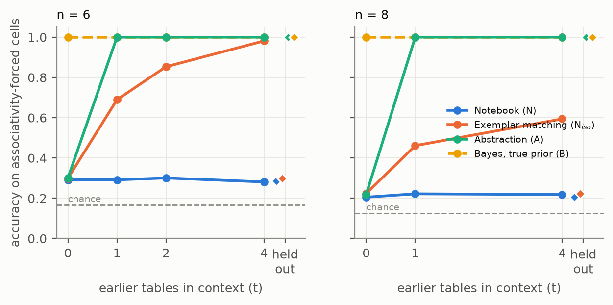
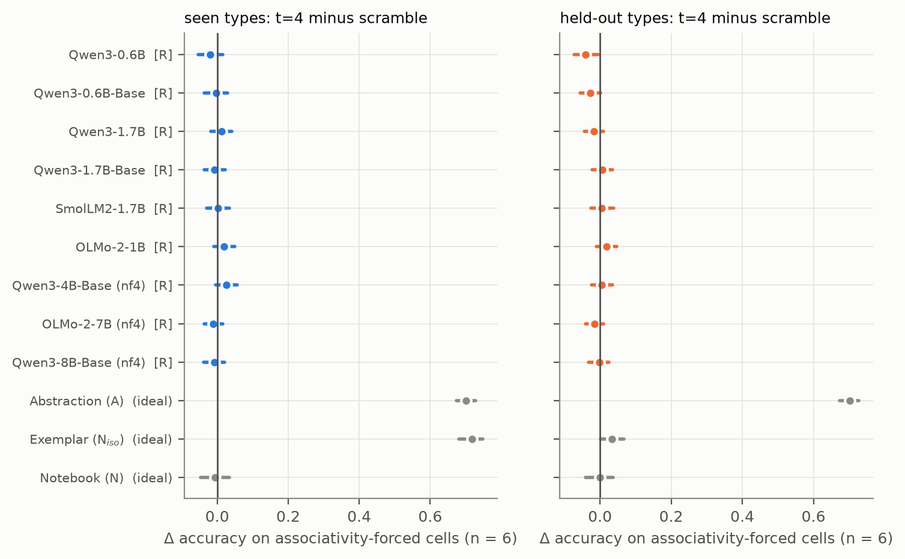
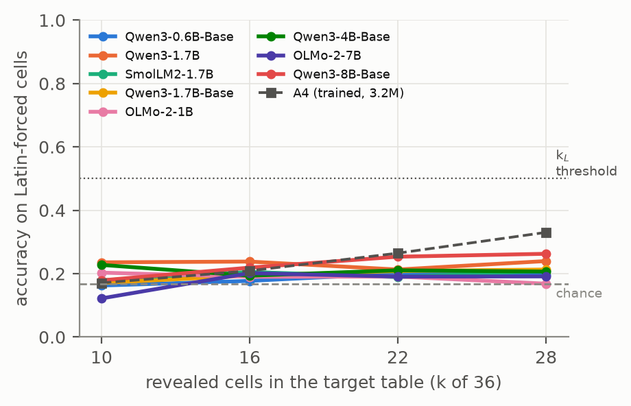
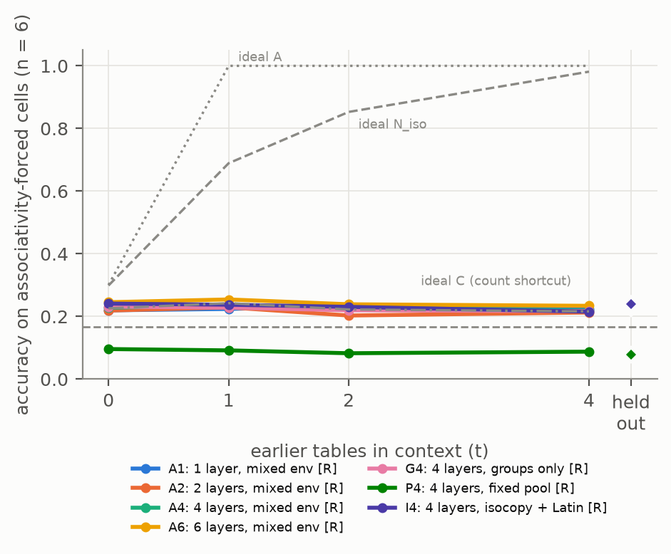
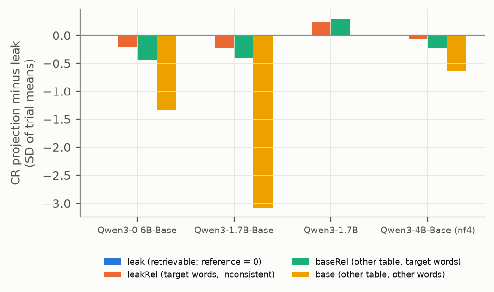
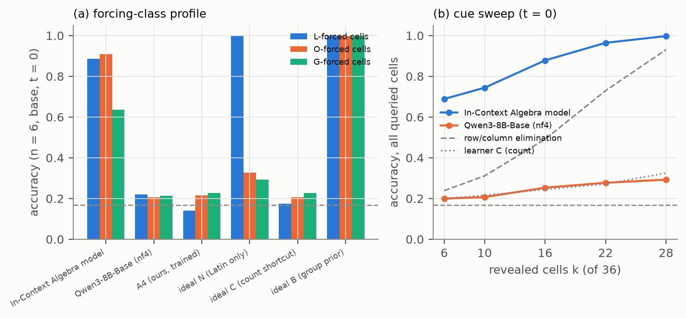

When a model improves at a structured task after seeing earlier examples in context, has it abstracted the structure or reused the examples? Behavioural improvement alone cannot tell: longer contexts, recall and exemplar matching all produce it. We introduce a compounding fingerprint for in-context completion of partial Cayley tables written in fresh word labels. Each queried cell is labelled by the weakest axiom class that forces it (Latin, loop or associativity), and each history of earlier complete tables is controlled by a length-matched scramble, held-out isomorphism types, a recall (leak) control and non-associative loops. A preregistered decision rule recovers seven exact idealised learners without error; only held-out transfer cleanly separates abstraction from exemplar matching. Nine checkpoints (ten model–precision configurations) from three families, up to 8B, are all recall-only. None infers Latin-forced cells in direct-answer mode, and none compounds (t = 4 minus scramble: −0.019 to +0.026, every CI including 0), although Qwen3 at 4–8B recalls seen tables at 0.95–0.96. Small from-scratch transformers instead learn a global count shortcut, which a post-hoc count learner matches to within 0.001–0.007 in five of six learned networks. The released In-Context Algebra model, our positive control, is classified above recall but not as Bayes-type: at t = 0, Latin- and loop-forced cells score 0.89–0.99, associativity-forced cells 0.53–0.70. The activation-space compute–retrieve axis from our earlier preprint moves significantly in the predicted direction in none of five models on a format- and length-matched retrieval/inference contrast and is significantly reversed in three; context vocabulary explains 64–87% of the reversal (exploratory).
A learner compounds experience when solving earlier problems makes later, related problems cheaper to solve. Learning to learn has a natural in-context form in language models: if a prompt holds several complete instances of a structured task, the model may do better on the next instance than it would without them. Such improvement is often read as evidence that the model has abstracted the shared structure. The reading matters, because an abstraction transfers to instances that share the structure but none of the surface, whereas reuse of the examples does not.
Behavioural improvement alone cannot establish abstraction, because at least three other explanations produce it. First, every added example lengthens the context, and context length by itself changes performance. Second, if an earlier example contains the answer, a model can recall or copy it without any inference. Third, a model can match the new instance against the stored examples and answer by analogy to the closest one. Exemplar matching improves with more examples just as abstraction does, and the two differ only on types that the history does not contain. In information-theoretic terms, a learner that stores the examples verbatim and one that has extracted their rules hold the same information about the task; they differ only in what that information makes cheaply usable [1]. A test of compounding therefore has to control context length, separate recall from inference, and include held-out types.
Algebraic operation tables make such a test exact. A partial Cayley table, with some cells revealed and the rest queried, determines some of its missing cells under weak assumptions and others only under strong ones. Whether a queried cell is fixed by the Latin property alone, by the loop axioms (identity and cancellation), or only through associativity can be decided exactly, by enumeration or SAT, for every cell of every trial. Each cell thus receives a forcing class, which states what a learner must know to answer it. Writing each table in fresh, arbitrary word labels removes semantic cues, and the earlier tables can be manipulated directly: replaced by length-matched tables without group structure, restricted to isomorphism types other than the target's, or made to contain the target's own labelled table. Exact idealised learners can then be run on the very trials the models see.
The closest work is In-Context Algebra [2]. Todd et al. train small transformers on sequences of group facts, with symbols reassigned in every sequence, and identify the networks' mechanisms: commutative copying, identity recognition and closure-based cancellation, with associative composition the weakest route. They do not measure how accuracy depends on the number of earlier tables, label cells by forcing class, compare against an exemplar baseline at equal budget, or evaluate pretrained language models. A second line of work asks whether in-context learners memorise or generalise. Raventós et al. [3] find a task-diversity threshold below which a transformer behaves like a Bayesian predictor over the discrete set of its pretraining tasks, and Wurgaft et al. [4] cast the trade-off between such memorising and generalising predictors in a hierarchical Bayesian account. Our exemplar and abstraction learners are in-context analogues of these two predictors, with the “seen tasks” supplied in the prompt under fresh labels rather than in pretraining. Chan et al. [5] report that transformers generalise from context mainly through exemplars and from weights mainly through rules, while pretrained language models generalise from context in a more rule-based way; held-out types test this contrast directly. Under the view of in-context learning as implicit Bayesian inference [6], a learner that already holds the true environment prior gains nothing from earlier tables written in fresh labels, and our Bayesian baselines make that prediction exact. Matsutani et al. [7] report gains from relabelled demonstrations of other worlds in Qwen3 base models, but with one shared vocabulary and, as far as we found, no length-matched control. We know of no published evaluation of pretrained language models on in-context group-table completion with fresh labels.
We turn this design into a compounding fingerprint. A model sees a history of t = 0, 1, 2 or 4 complete earlier tables, each written in its own fresh single-token English words, followed by a target table of order n = 5, 6 or 8 (a group, or in one n = 5 cell a loop) that reveals k of its cells, the cue. Every unrevealed cell is queried and scored by forced choice, and every cell carries its forcing class: Latin-forced (L), loop-forced (O), associativity-forced (G), forced only by commutativity or cyclicity (Ab, Cy), or undetermined (U). Base histories are compared with a length-matched scramble control, held-out types, a leak control that contains the target's own labelled table, and non-associative loops, over 1,800 trials per model. A preregistered decision rule maps the resulting signature to the learner classes R, N, N_iso, A and B-type. We applied it to seven exact idealised learners, to nine checkpoints (ten model–precision configurations) from three families [8, 9, 10], to seven small transformers trained from scratch, and to the released In-Context Algebra model. We used the same stimuli to test an activation-space direction from our own earlier preprint, the compute–retrieve (CR) axis [11]. The three largest pretrained models ran in 4-bit nf4 quantisation, whose preregistered control failed its tolerance. All model inference and training ran on one 8 GB laptop GPU, and every deviation from preregistration is listed in Appendix G.
Our contributions are:
Section 2 reviews related work. Section 3 defines the task, the forcing classes, the history conditions, the idealised learners and the decision rule. Section 4 describes the models, calibration, trained networks, reasoning probe, CR-axis test, positive control and statistics. Section 5 reports the results, Section 6 discusses what they do and do not establish, and Section 7 states the open problems.
The closest prior work is In-Context Algebra [2]. Todd et al. train small transformers (4 layers, 8 heads, width 1024) on sequences of facts xy = z from cyclic groups C3–C10 and dihedral groups D3–D5 (as the paper states; the released code for the checkpoint we score also samples D2 = Z2×Z2), with the map from group elements to tokens redrawn for every sequence. Their models reach near-perfect accuracy, transfer to held-out order-8 groups, and use identifiable mechanisms: commutative copying, identity recognition and closure-based cancellation. Associative composition is the weakest route, at 60.2% on the sequences that test it. Our forcing classes (Section 3.2) make this an exact per-cell measurement: a loop-forced (O) cell is fixed by identity and cancellation alone, an associativity-forced (G) cell only through associativity. Scored this way, the released In-Context Algebra model is the first real network for which the fingerprint returns a class above R, with Latin- and loop-forced cells at 0.89–0.99 and G cells at 0.53–0.70 at t = 0, in line with the authors' ranking of mechanisms (Section 5.7). That work evaluates no pretrained language models and does not measure how completion depends on the number of earlier, differently labelled tables; the released model's 16-token vocabulary fits at most one history table, so our compounding contrast cannot be measured on it. Adjacent work studies algebra learned in weights: grokking of finite-dimensional algebras [12], and in-context modular arithmetic that generalises out of distribution only above a threshold number of pretraining tasks [13]. “Cayley-table completion” in [14, 15] is a different problem, recovering a table by tensor factorisation rather than inferring it in context.
Raventós et al. [3] find a task-diversity threshold in transformers trained on linear regression: below it the model acts as a Bayesian estimator over the discrete set of pretraining tasks, above it as ridge regression. Wurgaft et al. [4] explain such transitions as a posterior-weighted trade-off between a memorising and a generalising predictor. Our exemplar learner N_iso and abstraction learner A (Section 3.4) are in-context analogues of these predictors, with the “seen tasks” supplied in the prompt under fresh labels. On identical trials both gain about +0.70 over the scramble control on G cells, and only held-out types separate them cleanly: +0.70 for A against +0.03 for N_iso (Section 5.1). Chan et al. [5] report that transformers trained on controlled stimuli generalise from context mainly through exemplars, whereas pretrained language models do so in a more rule-based way, increasingly with scale. Our design would also separate the two by the shape of compounding (gradual for exemplar matching, a step at t = 1 for abstraction), but none of the nine pretrained checkpoints compounds, so the prediction remains untested. If in-context learning is implicit Bayesian inference [6], a learner that already holds the true environment prior gains nothing from fresh-label histories; our Bayes learner B makes this exact, scoring 1.000 on G cells with and without a history.
Mechanistic work traces in-context learning to identifiable circuits. Induction heads complete a repeated pattern AB…A with B and coincide with a phase change in in-context ability [16], and symbol-abstraction, symbolic-induction and retrieval heads together carry out abstract rule induction in language models [17]. Our recall-only learner R corresponds to verbatim, induction-style copying, and the leak control, whose last history table is the target's own labelled table, measures that ability directly. Recall depends on family more than on size: under the leak control, G-cell accuracy is 0.52–0.65 for Qwen3 models up to 1.7B, 0.95 and 0.96 for Qwen3-4B-Base and Qwen3-8B-Base, 0.44 for SmolLM2-1.7B and 0.31–0.37 for OLMo-2, yet every one of these models is class R (Section 5.2). In the larger Qwen3 models, then, the absence of compounding is not a failure to read the context; the prerequisite inference is missing.
Several studies ask whether pretrained models adopt semantics defined only in the prompt. Overriding flipped labels and learning from semantically unrelated labels emerge with scale [18]. Performance on counterfactual task variants, such as arithmetic in unfamiliar bases, degrades relative to the default task [19], and language models underperform simple n-gram baselines on randomly sampled formal languages [20]. Analyses across the Pythia suite place in-context learning between memorisation and an independent symbolic algorithm [21]. Models reorganise their representations to match a graph defined only by random walks in context [22], yet often cannot use such representations downstream [23], and representational change within a context suggests that in-context learning is not one process [24]. Our null result fits this picture: up to 8B, no checkpoint infers Latin-forced cells in direct-answer mode, and none of the eight swept over cue density does so even at the densest cue, where one-pass row/column elimination would score 0.92 (post hoc; Section 5.3).
Matsutani et al. [7] come closest to compounding: few-shot demonstrations from different worlds, with the same or a different graph topology, improve in-context world modelling across several model families. Their worlds reassign one shared set of words to the graph's nodes, whereas our history tables use fresh words, and we found no length-matched control like our scramble history. Two raw increases from t = 0 to t = 4 in our data were reliable, and both vanish against the scramble history; for OLMo-2-1B at n = 6, t4 − t0 is +0.042 [+0.011, +0.073], but t4 − scramble is +0.020 [−0.008, +0.051]. Across all ten model–precision configurations, t4 − scramble lies between −0.019 and +0.026, with every 95% CI including 0 (Section 5.2).
A separate line reads the processing mode from activations. Demonstrations are compressed into a task vector [25] or a function vector carried by a few attention heads [26], and the Jacobian lens identifies representations a model is poised to verbalise, which carry intermediate steps of silent reasoning while automatic processing proceeds without them, as in a global workspace [27]. The compute–retrieve (CR) axis [11] probes mode directly: a mean-difference direction from 30 retrieval and 30 computation prompts, where “retrieve” means recall of facts stored in weights. That preprint notes that its retrieval prompts are shorter than the computation prompts, leaving prompt complexity as a possible confound. Our leak and base conditions remove it for in-context retrieval: they share format, token count and query position, yet accuracy is 0.53–0.97 in leak and 0.17–0.22 in base. The axis separates its own calibration prompts with AUC 0.96–0.99, but on this contrast it moves significantly in the predicted direction in 0 of 5 Qwen3 models and is significantly reversed in 3 (Section 5.6). In an exploratory control, context vocabulary explains 64–87% of the reversal; with vocabulary matched, a retrieval signal of the predicted sign appears in the post-trained model (dz +0.36) and without the chat template (dz +0.33 to +1.67). Whether such representations would carry induced axioms across tables is untested.
Storing past tables verbatim and extracting their axioms yield the same Shannon information about the environment. Predictive V-information [1] instead measures what a computationally bounded observer can use, and computation can create it. This frames our equal-budget comparison: N_iso and A enumerate at most the same number of candidate tables and differ only in what the history makes cheaply usable. For Latin squares, a critical set is a minimal set of entries that determines the square, and the smallest one corresponds to the minimum teaching dimension of the class [28]. Our forcing classes ask a cell-level version for one fixed cue: which unrevealed cells it already determines, and under which of the nested classes Latin, loop and group.
The compounding fingerprint has four parts: a table-completion task in which earlier tables can be shown or withheld, an exact label for every queried cell, history conditions that isolate what the history contributes, and a preregistered decision rule that maps the resulting signature to a learner class.
A trial presents one or more operation tables as facts x * y = z, one per line in random order, over words that are single tokens. Each table is preceded by a neutral header (Table A:, Table B:, …). The first t tables, with t ∈ {0, 1, 2, 4}, are the history. They are complete, and each uses a fresh set of words, so no word is reused across the tables of a trial. The last table is the target, which reveals k of its n² cells, the cue. Every unrevealed target cell is then queried independently by appending a newline and wa * wb =. The answer is a forced choice among the target's n words, scored by the model's next-token log-probability of each word with a leading space.
A single generator produced all stimuli. It assigns fresh words to each table through a random word–element bijection (only the leak control repeats a table, by design), randomises fact order, blacklists numerals, ordinals and identity-suggestive words, and draws from 101 words that are single tokens, with and without a leading space, in every tokenizer used. Because every table carries its own words, a base history can help with the target only through the structure of its tables.
Every queried cell is labelled exactly with the weakest axiom class under which the cue determines its value. This gives six forcing classes:
Latin classes were computed by enumeration for n ≤ 5 and with a SAT solver [29] otherwise, loop classes by enumeration for n ≤ 6 and SAT otherwise, and group classes by enumerating all labelled tables of every group of order n. The exact learners' code recomputes the classes; it agreed with the stimulus labels on all 57,200 queried cells of the main design (0 mismatches), and SAT agreed with exact counts on 913 trials.
Accuracy on G cells is the primary measure. A G cell is by definition not determined by identity and cancellation, so a learner that uses only Latin or loop constraints can do no better on it than guessing among the values a loop completion of the cue allows (the loop level); only a learner that uses group structure can exceed that level. Accuracy on L cells, accL, measures the most basic inference, and chance on every class is 1/n (0.167 at n=6).
The fingerprint compares G-cell accuracy across five history conditions (Table 1), the base condition and four controls, each of which isolates one route by which a history could raise accuracy.
| condition | history | target | controls for |
|---|---|---|---|
| base | random groups of order n | random group | — |
| scramble | Latin squares with no two-sided identity, matched in fact count and token length | random group | context length |
| held-out types | n=6: Z6 only; n=8: abelian types only (Z8, Z4×Z2, Z2³) | an unseen type (n=6: S3; n=8: D4 or Q8) | exemplar matching |
| leak | the last history table is the target's own labelled table | random group | recall |
| loops (n=5) | group-like non-associative loops | Z5, or a loop | associativity |
The scramble control contains no group but matches a base history in facts and tokens (6 of the 400 n=6 scramble tables have a one-sided identity). Base minus scramble G accuracy at t=4, written t4 − scramble, therefore measures what group histories add beyond context length. With held-out types, no history table shares the target's isomorphism type, so an exemplar matcher has nothing to copy while an abstracting learner can still apply the axioms. The leak control makes every queried cell answerable by recall, a positive control for context use. The loops condition supplies histories that have an identity but are not associative, testing whether a learner infers “group” from an identity alone.
At n=6 (k=10) and n=8 (k=16) the main design covers base t ∈ {0, 1, 4}, scramble t=4 and held-out t ∈ {1, 4}; n=6 alone adds base t=2 and leak t=1. At n=5 (k=6) it covers base t ∈ {0, 4} and the two loop cells at t=4. With 100 trials per cell, every idealised learner, pretrained model and trained network sees the same 1,800 trials and 57,200 scored cells (the In-Context Algebra model sees only the cells that fit its 16-symbol vocabulary, Section 4.6). The order n=6 is primary and n=8 secondary.
To check that the fingerprint separates the hypotheses it targets, we scored seven exact algorithms on the identical trials:
Ties are broken uniformly at random with a fixed seed. The rule distinguishes five learner classes: R (no inference), N (inference without use of the history), N_iso (exemplar reuse), A (abstraction) and B-type (the structural prior is in place without history). The preregistered G-cell predictions at n=6, k=10 differ sharply. R stays at chance (0.17) and N at 0.30 for every t. N_iso rises gradually (0.30, 0.65 and 0.96 at t = 0, 1 and 4), with held-out accuracy near 0.31. A steps from 0.30 at t=0 to 1.00 from t=1, with held-out accuracy 1.00. B and Bh stay at or near 1.00. Abstraction and exemplar matching therefore both compound to near ceiling by t = 4, so the compounding contrast alone cannot tell them apart; in the rule, held-out transfer does, and the shape statistic (Section 3.5) adds a secondary step-versus-gradual distinction.
An eighth learner, C (count shortcut), was added post hoc, after the trained networks were found to use it (Section 5.4). C answers uniformly among the target words that occur least often as a result in the revealed cue. It uses no cell-level, history or axiom information.
The decision rule (Table 2) was preregistered and frozen before any model output. It is applied per model to the n=6 cells, on accuracy and, separately, on mean pgold, the probability of the correct word under a softmax over the n candidates.
| step | quantity | criterion | class |
|---|---|---|---|
| 1 | accL, L-cell accuracy at base t=0 | accL < 1/n + 0.25 | R |
| 2 | rescaling g(x) = (x − 1/n)/(accL − 1/n) | — | — |
| 3 | g(G t0) | ≥ 0.85 | B-type |
| 4 | base = max(g(G t0), g(G scr4)); comp = g(G t4) − base | comp < 0.15 | N |
| 5 | held = g(G held4) − base | held ≥ 0.6·comp | A; otherwise N_iso |
Step 1 asks whether the model infers at all: below 1/n + 0.25 (0.417 at n=6), even cells that the Latin property alone determines are not solved, and the model is class R. Step 2 rescales accuracy so that 0 is chance and 1 is the model's own Latin accuracy. Step 3 identifies a learner whose group prior is already in place at t=0. Step 4 takes the higher of the t=0 and scramble values as baseline, so that a gain from context length alone does not count as compounding. Step 5 asks whether the gain survives when no history table shares the target's type.
The rule always also reports the abstraction fraction w = held/comp and the shape statistic g(G t4) − g(G t1). A shape near 0 indicates a step, as for A; N_iso's gradual rise gives about 0.3. At n=8 the same quantities form a secondary analysis, with raw G accuracy reported alongside, because L cells are rare there (fewer than 40 per cell) and accL is noisy. For class R the rescaled quantities are not meaningful, since g is undefined when accL is near chance; class R means only that accL is below threshold, and recall is read separately from the leak control. Applied to the idealised learners, the rule returns each learner's own class at both n=6 and n=8, on both accuracy and mean pgold, with 0 misclassifications; Asl is classified A (Section 5.1).
All model inference and training ran on one shared laptop RTX 5070 GPU (8 GB); the exact learners and analyses ran on the CPU.
We scored nine checkpoints (ten model–precision configurations) from three families (Table 3): Qwen3 [8], base and post-trained; SmolLM2-1.7B-Instruct [9], a Llama-architecture model; and the fully open OLMo-2 [10].
| model | family | training | precision | experiments |
|---|---|---|---|---|
| Qwen3-0.6B | Qwen3 | post-trained | bf16 | 1 |
| Qwen3-1.7B | Qwen3 | post-trained | bf16 | 1, 2a, 4, 5, 5b |
| Qwen3-0.6B-Base | Qwen3 | base | bf16 | 2, 5, 5b |
| Qwen3-1.7B-Base | Qwen3 | base | bf16; nf4 † | 2, 5, 5b |
| Qwen3-4B-Base | Qwen3 | base | nf4 † | 2, 5, 5b |
| Qwen3-8B-Base | Qwen3 | base | nf4 †, CPU embeddings and head | 2, 5 |
| SmolLM2-1.7B-Instruct | SmolLM2 | post-trained | bf16 | 1, 2a |
| OLMo-2-0425-1B | OLMo-2 | base | bf16 | 2 |
| OLMo-2-1124-7B | OLMo-2 | base | nf4 †, CPU embeddings and head | 2 |
Prompts are the raw context plus the query, without a chat template. Queries were batched on copies of each trial's prefix cache rather than scored singly as preregistered; on the Experiment-1 models the two agree on 94–98% of argmax decisions, differing only on near-ties. For the 7B and 8B models, embeddings and the float32 output head ran on the CPU; in two checks this offload agreed with standard scoring on 91.9% and 94.7% of argmax decisions. Some result files mix revisions of the scoring script (Appendix G). Re-scoring the four n=6 cells of Qwen3-1.7B-Base's primary contrast with the final code, one query at a time, moved per-cell G accuracy by at most 0.005 and left t4 − scramble at −0.006 [−0.034, +0.021] (originally −0.007 [−0.037, +0.020]; Appendix F).
nf4 quantisation [30] was needed to fit the 4B, 7B and 8B models. A preregistered bf16-versus-nf4 control on Qwen3-1.7B-Base required an unchanged class and every per-cell G accuracy within 0.03. The control failed. nf4 lowered G accuracy in all 17 cells that contain G queries, by 0.020–0.067, and per-query argmax agreement was 56%, although the class (R at n=6 and n=8) and the null t4 − scramble contrast were unchanged (Section 5.2). As preregistered, all nf4 results, marked †, carry the caveat that G accuracy is biased low by about 0.04 and per-query predictions are unstable. The control shows that nf4 did not create an effect, not that it could not hide a weak one.
Because compounding presupposes Latin inference, Experiment 2a swept cue density (n=6, base histories, t ∈ {0, 4}, k ∈ {6, 10, 16, 22, 28}, 50 new trials per (t, k)) on eight models. The Latin threshold kL is the smallest k at which L accuracy, pooled over t, reaches 0.5; a model without one is non-inferential on this format.
A guard requiring at least 30 pooled L queries per k, added after the Qwen3-0.6B-Base sweep because k=6 has only 4 L cells in 100 trials, changes the status of two models. Without it, Qwen3-0.6B-Base and Qwen3-1.7B-Base answer 2 of 4 L queries at k=6, so kL = 6; being R at k=10, they trigger the preregistered conditional step (addendum 2d), the only adaptive step allowed, which regenerates the n=6 main contrasts at k=16 (100 trials per cell, new seeds) and takes accL from k=16 base t=0. We ran it as specified after the final audit and report both readings (Section 5.3).
Two exploratory variants are not used for classification: an instructed task header (k ∈ {10, 22}) and a sorted format that lists the target's facts by row (k ∈ {16, 22, 28}), added after the first three ≤1.7B models showed chance-level L accuracy. As post hoc references we computed learner C and one-pass row/column elimination, which guesses uniformly among the values absent from the cell's row and column.
To test whether the fingerprint recovers the class implied by a known training diet (Experiment 3), we trained GPT-style decoders (pre-LN, rotary embeddings [31], width 256, 8 heads, 1, 2, 4 or 6 layers; 3.17M parameters at 4 layers) on in-context group-table sequences laid out like the stimuli, in a 70-token vocabulary with fresh symbols per table and loss on answer tokens only. Diets use orders {4, 5, 6, 7, 8, 10} and exclude S3, D4 and Q8. The mixed-environment diet (A1, A2, A4, A6, by layer count) draws each sequence from groups (0.5), identity-free Latin squares (0.25) or non-associative loops (0.25), so that history is informative about the environment. Three 4-layer controls use groups only (G4), groups from a fixed pool of 32 labelled tables per order (P4), and an exemplar diet of isomorphic-copy tasks and identity-free Latin squares with no group or identity (I4).
Predicted classes were frozen before training (Section 5.4). The method counts as validated if A4 is A or B-type, I4 is N_iso, and P4 and A1 are R or N; a run whose in-training remaining-fact accuracy at n=6 never exceeds chance + 0.10 is not learned and excluded from validation.
Training ran for 14,000 AdamW steps [32] (β = 0.9/0.95, weight decay 0.1, clipping 1.0, seed 0) of ⌊ 65536/L ⌋ sequences of length L, each step from a single (n, t), with 500 warmup steps and cosine decay to 10% of a 6 × 10−4 peak (10−3 for 1–2 layers); t ∈ 0–4 (t ≤ 2 at n=10, so that sequences fit 2,400 tokens). The target table is complete in training and the loss covers every answer token after the sequence's first fact, so the generator's cue size k, uniform in [⌈ 0.15 n2 ⌉, ⌊ 0.45 n2 ⌋], does not affect training. Four runs were interrupted by laptop standby or a scheduler change; three were resumed from their last checkpoint and one retrained from scratch, all reaching the preregistered 14,000 steps on a continuous learning-rate schedule (Appendix G).
Each network was scored on the identical Experiment-1 trials, with words mapped to fresh random symbols per table (four draws), and classified by the unchanged rule; a post hoc diagnostic compares its predictions with learner C and cell-level row/column elimination.
Experiment 4 (exploratory, not preregistered) asked whether direct answering limits Latin inference. Qwen3-1.7B answered one Latin-forced cell per trial under a chat prompt stating the Latin-square rule, so the probe measures inference given the rule. Decoding was greedy, with thinking on (at most 4,096 tokens) or off (at most 400); truncated thinking counts as incorrect. The planned design (four conditions × 30 trials, 1,536 thinking tokens) truncated all 13 thinking answers in its first condition, so we reduced it to 15 trials each of sorted and raw k=28.
Experiment 5 (preregistered) tested the “compute versus retrieve” activation detector from our earlier preprint [11], whose stated limitation is that its compute prompts are longer and more complex than its retrieval prompts. Our stimuli remove this confound: in the n=6 leak cell at t=1 every query is retrievable, while in base at t=1 the same format, token count and query position require inference.
We ran the published detector code read-only, in bf16 rather than fp16: a mean-difference axis from the paper's 30 + 30 calibration prompts at the best of four layers, read at the last token of chat-template (primary) and raw inputs. The three bf16 models received all 26 queries per trial and the two nf4 models (†) 11–12 class-stratified queries, over 100 trials per condition. On Qwen3-0.6B-Base (bf16, uncached forwards) our forward pass reproduced the detector's hidden states exactly; the nf4 and CPU-embedding paths were not checked this way, and the cached path matched uncached forwards in an audit check (r ≥ 0.996; Appendix F). H1 predicts that base projects higher, toward “compute”, than leak; it is supported if the trial-bootstrap CI excludes 0 in that direction in at least 3 of 5 models. H2 predicts a rise in the order L < O < G within base. The hypotheses were finalised minutes after a discarded 6-trial smoke test whose estimate pointed against H1; the direction was kept.
Experiment 5b (exploratory) followed the H1 result and a 20-trial audit pilot in which relabelling closed 53% and 71% of the gap, so it re-estimates a seen effect rather than testing it independently. Leak and base are matched in length and format but not vocabulary: a leak context has 6 distinct words, a base context 12 (Appendix D). baseRel writes the base history in the target's words (shared vocabulary, still non-retrievable); leakRel permutes the leak history's words by a random derangement (identical vocabulary, inconsistent answers). We report fvocab = (baseRel − base)/(leak − base), the share of the gap reproduced by vocabulary alone, and leakRel − leak, retrievability with vocabulary fixed (predicted > 0), from uncached forwards on all 26 queries and 100 trials in four models.
Experiment 6 (preregistered) applied the fingerprint to the released In-Context Algebra model [2], a real network that should not be class R: a 4-layer, 8-head transformer with d=1024 and 16 symbol tokens, trained on in-context cyclic and dihedral group tables (C3–C10, D2–D5). We re-implemented it from the released code without executing that code.
On its own distribution the port reaches 0.973 held-out final-fact accuracy, and 0.959 under the upstream protocol on 1,024 fresh sequences, against the authors' 99.4%. Theirs is the best of about 290 training-time evaluations on one cached 512-sequence set; on our fresh sequences the released checkpoints from 20k steps on score 0.959–0.975, so the gap is consistent with checkpoint selection rather than a port error. Training loss is 0.917 (upstream: about 0.93), and an independent second forward pass agrees with the adapter on 3,200 of 3,200 answer positions (Appendix E).
The adapter maps each trial's words to distinct random symbols (four draws; no group identity maps to ‘0', as in training) and scores each query by forced choice over the target's n symbols. Only cells with at most 16 distinct words fit, which excludes every t ≥ 2 and scramble cell, so comp, held and w cannot be computed. The primary analysis is therefore rule steps 1–3 on base t=0, returning R, B-type or “non-R, non-B”, with six directional predictions (Section 5.7). Interleaved fact order and six training checkpoints are exploratory; a mechanism split of G cells, compared with an exact loop-level baseline, is post hoc.
Accuracies carry Wilson 95% intervals, except the rule's accL intervals, which are trial-bootstrap percentile intervals. Contrasts carry trial-level bootstrap 95% intervals (2,000 resamples within each cell), with seeds fixed per test in the main analyses; only the Experiment 2 per-model t4 − t0 CIs and the scoring re-check depend on processing order.
Experiments 1, 2, 3, 5 and 6 were preregistered (2026-10-06 to 2026-10-11), each before its outputs, except that Experiment 5's file was finalised minutes after a discarded six-trial smoke test; Experiments 4 and 5b are exploratory. We report every model and run, including nulls and interrupted runs. Two adversarial audits re-derived the Experiment 1–5 numbers that existed at the time; later verification passes (2026-10-09 to 2026-10-11) re-derived the results produced after them (learner C, the count-shortcut diagnostic, the scoring checks, Experiment 5b and the addendum-2d run) and those of Experiment 6. All corrections are incorporated. Appendix G lists all 23 deviations, including 100 rather than 200 trials per cell. Apart from the ≥30-query guard, none altered a stimulus, threshold or decision rule.
Every run is complete. All numbers below come from auto-generated result tables, and the full table for every model, network and idealised learner except Asl is in Appendix A. Two adversarial audits re-derived the Experiment 1–5 numbers that existed at the time, and later verification passes (2026-10-09 to 2026-10-11) re-derived the results produced after them and those of Experiment 6; the text incorporates all their corrections. Post hoc and exploratory analyses are labelled where they appear, and every deviation from the preregistrations is listed in Appendix G.
We scored the seven preregistered exact learners (Section 3.4) on the same 1,800 trials that the models see. The preregistered decision rule (Section 3.5) returns every learner's own class at n=6 and at n=8, on both accuracy and mean pgold, with 0 misclassifications; Asl, which infers “group” from an identity alone, is classified A. Table 4 lists the signatures at n=6.
| learner | class | G, t=0 → t=4 | held-out G, t=4 | t4 − scr [95% CI] | shape [95% CI] | w |
|---|---|---|---|---|---|---|
| R (recall) | R | 0.179 → 0.172 | 0.168 | −0.004 [−0.032, +0.026] | — | — |
| N (notebook) | N | 0.292 → 0.281 | 0.287 | −0.007 [−0.047, +0.036] | −0.013 [−0.059, +0.036] | — |
| N_iso (exemplar) | N_iso | 0.299 → 0.981 | 0.298 | +0.718 [+0.682, +0.751] | +0.351 [+0.257, +0.446] | ≈ 0 |
| A (abstraction) | A | 0.301 → 1.000 | 1.000 | +0.701 [+0.675, +0.727] | 0.000 | 1.00 |
| B (true prior) | B-type | 1.000 → 1.000 | 1.000 | 0.000 | — | — |
| Bh (hierarchical) | B-type | 1.000 → 1.000 | 1.000 | +0.601 [+0.574, +0.630] | — | — |
| C (count; post hoc) | R | 0.226 → 0.216 | 0.244 | −0.016 [−0.041, +0.009] | — | — |
On associativity-forced (G) cells the four core signatures differ sharply (Figure 1). The notebook learner N stays flat, at 0.29 at t=0, 0.28 at t=4 and 0.29 on held-out types. Exemplar matching (N_iso) rises gradually, through 0.30, 0.69, 0.85 and 0.98 at t = 0, 1, 2 and 4, but stays at 0.30 on held-out types; its shape statistic is +0.35 [+0.26, +0.45] and its w is about 0. Abstraction (A) steps to 1.00 at t=1 and keeps that level on held-out types, with a shape of 0.000 and w = 1.00. Bayes with the true prior (B) is at 1.00 from t=0. B and Bh are classified B-type at step 3, before the compounding contrast is consulted.
The compounding contrast, t=4 minus a length-matched scramble history, is about +0.70 for both A and N_iso. Only held-out transfer separates them cleanly: held-out minus scramble is +0.70 for A against +0.03 for N_iso. A compounding contrast on its own therefore cannot tell abstraction from exemplar reuse, and the held-out types are what make the distinction.
At n=8, N_iso's G accuracy (0.22, 0.46 and 0.59 at t = 0, 1 and 4) tracks the missing mass realised in these stimuli: the target type occurs in the history in 28% of trials at t=1 and 47% at t=4. It departs from the design-stage expected-coverage prediction (0.38 and 0.69) because the sampled histories over-cover the target type at t=1 (expected 20%) and under-cover it at t=4 (expected 59%).
Post hoc. We added an eighth learner, C (count shortcut), after the diagnosis reported in Section 5.4. It answers with the target word least represented among the revealed facts. The rule classifies it R at n=6 and at n=8, with accL 0.175, G t0 0.226 and leak 0.235. This is the correct verdict, because C uses no cell-level, history or axiom information.

All nine checkpoints (ten model–precision configurations) from three families are classified R at both n=6 and n=8, on both accuracy and pgold (Table 5). The set comprises the post-trained Qwen3-0.6B and Qwen3-1.7B; Qwen3-0.6B-Base, Qwen3-1.7B-Base (bf16 and nf4†), Qwen3-4B-Base and Qwen3-8B-Base (nf4†) [8]; SmolLM2-1.7B, which has a Llama architecture [9]; and OLMo-2-1B (bf16) and OLMo-2-7B (nf4†), a fully open family [10]. Accuracy on Latin-forced cells at t=0 (accL) is 0.14–0.29. Several values are at or below chance (0.167), and every value is below the preregistered threshold of 0.417.
| model | precision | accL | t4 − scr [95% CI] | leak G |
|---|---|---|---|---|
| Qwen3-0.6B | bf16 | 0.289 | −0.019 [−0.053, +0.014] | 0.620 |
| Qwen3-1.7B | bf16 | 0.193 | +0.012 [−0.016, +0.040] | 0.648 |
| Qwen3-0.6B-Base | bf16 | 0.219 | −0.003 [−0.035, +0.030] | 0.515 |
| Qwen3-1.7B-Base | bf16 | 0.175 | −0.007 [−0.037, +0.020] | 0.627 |
| Qwen3-1.7B-Base | nf4 † | 0.140 | +0.006 [−0.022, +0.035] | 0.590 |
| Qwen3-4B-Base | nf4 † | 0.202 | +0.026 [−0.005, +0.056] | 0.949 |
| Qwen3-8B-Base | nf4 † | 0.219 | −0.008 [−0.038, +0.022] | 0.958 |
| SmolLM2-1.7B | bf16 | 0.184 | +0.002 [−0.031, +0.035] | 0.442 |
| OLMo-2-1B | bf16 | 0.228 | +0.020 [−0.008, +0.051] | 0.307 |
| OLMo-2-7B | nf4 † | 0.158 | −0.011 [−0.038, +0.017] | 0.365 |
At n=6, t4 − scramble lies between −0.019 and +0.026 (Qwen3-8B-Base: −0.008 [−0.038, +0.022]), and every 95% CI includes 0 (Figure 2). Held-out minus scramble lies between −0.04 and +0.02.
Two raw increases from t=0 to t=4 were reliable, and both vanish against the scramble history. OLMo-2-1B at n=6 gains +0.042 [+0.011, +0.073] from t=0 to t=4, but only +0.020 [−0.008, +0.051] relative to scramble. Qwen3-0.6B at n=8 gains +0.031 [+0.014, +0.049], and +0.008 relative to scramble, with a CI that includes 0. Neither raw gain survives the length-matched control, so both are consistent with effects of context length alone, which is why that control is needed.
When the history contains the target's own labelled table (the leak control), G-cell accuracy is 0.52–0.65 for the Qwen3 models up to 1.7B (0.59 for nf4 Qwen3-1.7B-Base), 0.95 for Qwen3-4B-Base and 0.96 for Qwen3-8B-Base. It is 0.44 for SmolLM2-1.7B, and 0.31 and 0.37 for OLMo-2-1B and OLMo-2-7B. The larger Qwen3 models thus retrieve almost perfectly and still do not infer.
The preregistered control (Qwen3-1.7B-Base, nf4 against bf16, all 1,800 trials) failed its tolerance. nf4 lowered G accuracy in all 17 cells that contain G queries, by 0.020–0.067 (pooled −0.034; mean of per-cell differences −0.040), and per-query argmax agreement was 56%. The class (R) is unchanged, and the compounding contrast is null in both precisions: at n=6, t4 − scramble is −0.007 [−0.037, +0.020] in bf16 and +0.006 [−0.022, +0.035] in nf4.
nf4 therefore did not create a spurious effect, and it preserved strong context use (leak 0.63 → 0.59). What this control cannot show is whether nf4 would hide a weak real effect at 4B, 7B or 8B, because at 1.7B there was nothing to hide. The low bias (pooled −0.034) applies to G accuracy; pooled L accuracy moved by −0.024 and O accuracy by +0.032.
A post-hoc diagnostic (exp1/diag.py) shows that at n=6 Qwen3-1.7B and SmolLM2-1.7B answer G cells with one of the query's own words in 46% and 44% of cases, against 30% for a uniform guess; over all orders the shares are 39% and 40%, against 26%. Qwen3-0.6B shows no such bias at n=6 (27% against 30%) or at n=8 (14% against 23%; 19% against 26% over all orders). At n=5, however, it too exceeds the uniform rate (46% against 35%), and the two 1.7B models score 62% and 56%. Because the correct answer is never a query word (0 of 31,553 G cells), this bias pulls G accuracy below chance.

On the cue sweep (n=6; k = 10 → 28 revealed cells of 36), Latin-forced accuracy pooled over t stays close to chance (0.167) for every pretrained model (Table 6; Figure 3). No model comes near the preregistered threshold of 0.5 at any k with at least 30 L queries.
| model | k=10 | k=16 | k=22 | k=28 | k28 − k10 [95% CI] |
|---|---|---|---|---|---|
| Qwen3-0.6B-Base | 0.163 | 0.177 | 0.200 | 0.196 | +0.034 [−0.036, +0.102] |
| Qwen3-1.7B | 0.236 | 0.238 | 0.213 | 0.240 | +0.004 [−0.089, +0.087] |
| SmolLM2-1.7B | 0.179 | 0.205 | 0.189 | 0.209 | +0.030 [−0.041, +0.100] |
| Qwen3-1.7B-Base | 0.171 | 0.194 | 0.208 | 0.213 | +0.042 [−0.034, +0.115] |
| Qwen3-4B-Base † | 0.228 | 0.194 | 0.211 | 0.207 | −0.021 [−0.106, +0.062] |
| Qwen3-8B-Base † | 0.179 | 0.219 | 0.254 | 0.263 | +0.084 [+0.010, +0.153] |
| OLMo-2-1B | 0.203 | 0.190 | 0.191 | 0.168 | −0.035 [−0.112, +0.038] |
| OLMo-2-7B † | 0.122 | 0.202 | 0.191 | 0.191 | +0.069 [+0.004, +0.128] |
| A4 (trained) | 0.171 | 0.209 | 0.265 | 0.330 | +0.160 [+0.099, +0.217] |
Two pretrained models rise marginally. For Qwen3-8B-Base the rise appears at both t=0 (0.22 → 0.29) and t=4 (0.14 → 0.23), but neither per-t CI excludes 0, and at k=28 accuracy is lower with four history tables than with none (0.23 against 0.29). OLMo-2-7B starts below chance, at 0.12, and its rise is concentrated at t=0.
At k=6 there are only 4 L queries in 100 trials, and Qwen3-0.6B-Base and Qwen3-1.7B-Base each answer 2 of them correctly (0.50). Under the addendum-2a rule as frozen, that makes kL = 6 for these two models. Both are R at k=10, so the conditional k=16 operating point (addendum 2d) is triggered. The guard of at least 30 L queries, which excluded k=6, was added after the Qwen3-0.6B-Base sweep had been seen (Appendix G, row 4). We therefore also ran 2d as preregistered, on 2026-10-09, after the final audit. Both models remain R at k=16. Their accL values are 0.177 [0.154, 0.201] and 0.219 [0.196, 0.241] (trial-bootstrap 95% CIs, as computed by the decision rule), below 0.417, and t4 − scramble is −0.034 [−0.092, +0.024] and +0.006 [−0.058, +0.065].
With the guard, kL is undefined for all eight calibrated models, so all of them are non-inferential on this format. Qwen3-0.6B, the post-trained model, was not swept.
At k=28, 98% of the missing cells are Latin-forced (784 of 800), and one-pass row/column elimination alone leaves a single candidate for 86% of those (675 of 784; exp2/k28_elimination.md). Choosing uniformly among the remaining candidates, this elimination would score 0.92 over all missing cells. The direct-answer failure is therefore not about missing information.
Listing the target's facts row by row, a variant added after the sweeps of the first three models (Qwen3-0.6B-Base, Qwen3-1.7B and SmolLM2-1.7B; Appendix G), helps at k=28. Qwen3-4B-Base gains +0.108 [+0.066, +0.149] and Qwen3-8B-Base +0.101 [+0.061, +0.144], reaching 0.32 and 0.36. Smaller gains with CIs excluding 0 appear for Qwen3-1.7B-Base (+0.046), OLMo-2-7B (+0.045) and Qwen3-0.6B-Base (+0.029). Qwen3-1.7B (+0.027) and SmolLM2-1.7B (+0.024) show similar but non-significant gains, and OLMo-2-1B shows none (+0.005). Sorted-format gains are therefore not specific to 8B (Appendix B).
A one-paragraph task header changed L and G accuracy by −0.083 to +0.042 over 32 contrasts: 8 models × k ∈ {10, 22} × {L, G}, pooled over t. Each contrast requires at least 30 queries in its cell. This guard was added to the kL rule after the first sweep (Appendix G, row 4), and it is applied here to every class. The mean change is −0.006, and 2 of the 32 CIs exclude 0, both negative.
The preregistered H1, that L accuracy rises with k for every model, is not supported. Its second part, that kL falls with scale, cannot be tested with the guard; without it, only two of the smallest models have a kL, an artefact of 4 queries. H2, that any compounding appears only in the larger models, holds vacuously, since no model compounds. H3, that held-out transfer separates A from N_iso in a model that compounds, cannot be tested.

We trained seven GPT-style networks from scratch on the preregistered diets (Section 4.3), with 3.2M parameters at 4 layers and about 0.91B training tokens each (14,000 steps of up to 65,536 tokens). Every one is classified R, and every one also fails the recall (leak) control, with leak G accuracy of 0.08–0.24 (Table 10). For these networks, class R means only that accL is below threshold: they neither recall nor infer at sparse cues.
The learned networks answer each trial with essentially one word: the target word least represented among the revealed facts (exp3/heur/). In A4, 98.6% of predictions fall in that least-revealed set, which across cells holds about 30% of the target words. A4's accuracy equals that of the count shortcut C to within 0.001 on all 1,800 main trials (−0.0008 [−0.0017, +0.0001]) and on the cue sweep, and A1, A2, G4 and I4 match C to within 0.007.
The shortcut also explains the in-training plateau. Applied to the in-training evaluation conditions (teacher-forced, with the training generator), the count shortcut scores 0.33 at n=6 and 0.25 at n=8, and the networks reach 0.29–0.36 at step 14,000. On the identical sequences, averaged over the evaluation conditions of each order, A4, G4 and I4 sit within ±0.006 of the shortcut, A1 and A2 sit below it, and A6 sits slightly above it (+0.015 at n=6). Cell-level row/column elimination would score 0.70.
It also explains A4's rise on the cue sweep. On L cells A4 goes from 0.17 at k=10 through 0.21 and 0.26 to 0.33 at k=28 (Table 6). Over all cells its accuracy matches the shortcut's to within 0.004 at every k: 0.196 against 0.200 at k=6, 0.214 against 0.213 at k=10, and 0.334 against 0.334 at k=28. The networks therefore did not learn Latin constraints. They learned a global symbol-count statistic, which is a weak consequence of the Latin property.
Among the learned networks, the 6-layer A6 is the only exception, and a small one. It is less constant within a trial (75% of its predictions fall in the least-revealed set), and it beats the shortcut by +0.014 [+0.012, +0.015]. P4, which is not learned, does not follow the shortcut at all: 28% of its predictions fall in the least-revealed set, about the uniform rate, and its accuracy is 0.048 below the shortcut's.
| run | diet | predicted | observed | t4 − scr [95% CI] | held-out G | prediction |
|---|---|---|---|---|---|---|
| A4 | mixed, 4 layers | A (or B-type) | R | −0.002 [−0.026, +0.021] | 0.238 | not met |
| G4 | groups only | B-type or N | R | −0.014 [−0.037, +0.007] | 0.241 | not met |
| I4 | isocopy + Latin | N_iso | R | −0.013 [−0.037, +0.009] | 0.239 | not met |
| A1 | mixed, 1 layer | R or N | R | −0.014 [−0.037, +0.011] | 0.230 | met (trivially) |
| A2 | mixed, 2 layers | N-like, O ≫ G | R | −0.014 [−0.037, +0.011] | 0.226 | not met |
| A6 | mixed, 6 layers | w ≥ A4's; maybe B-type | R | −0.010 [−0.036, +0.015] | 0.239 | not met |
| P4 | fixed pool of 32 tables | R or N | R; not learned | +0.013 [−0.010, +0.036] | 0.079 | excluded |
Two entries need a note. A2 was predicted to be N-like with O ≫ G, but at n=6, t=0 its O and G accuracies are 0.21 and 0.22. A6 has w = 0.57, but the value is uninterpretable because its comp is negative (−0.22), and A4's w is undefined.
We applied the three preregistered Experiment-3 criteria (exp3/PREREGISTRATION.md) after the second audit. Under the learning-failure rule, every run except P4 exceeds chance + 0.10 (0.267) on in-training n=6 remaining-fact accuracy, with maxima of 0.33–0.36. P4 never does: its maximum is 0.183, and it memorised its pool (training loss 0.005) without transfer to fresh symbols. P4 is therefore not learned; we report it but exclude it from method validation. A post-hoc caveat applies: the count shortcut alone scores 0.33, so this threshold does not distinguish learning the task from learning the shortcut. A future preregistration should set the threshold relative to learner C.
A4 and I4 are R, against predictions of A or B-type and of N_iso. The preregistration asks that each mismatch be attributed either to the method or to the training diet. The in-training evaluations, compared post hoc with the count shortcut, attribute it to training. On the identical training-generator sequences, A4 and I4 stay, on average over conditions, within ±0.006 of the count shortcut at n=6 and n=8. Their first-fact accuracy after the cue (0.23 for A4 and 0.21 for I4 at step 14,000; chance 0.17) is near the shortcut's level (0.20) and well below row/column elimination (0.30). On the identical trials, the fingerprint returns the same class (R) for the networks as for the exact count learner C.
Held-out G accuracy at t=4 is 0.230 (A1), 0.226 (A2), 0.238 (A4) and 0.239 (A6). This is not monotone in depth, and the CIs overlap. comp is undefined for A1, A2 and A4, because their accL is below chance; for A6 it is negative, −0.22 [−3.24, +0.16].

This probe was exploratory and not preregistered (Section 4.4). Qwen3-1.7B answered Latin-forced cells with thinking on (up to 4,096 tokens) and off. The trials were the first 15 t=0 trials each of the sorted and raw k=28 formats, and the prompt stated the Latin rule. With thinking off, the model answered 4 of 15 sorted and 3 of 15 raw trials correctly. With thinking on, it answered 1 of 15 correctly in each format, and 14 of the 15 runs in each format were truncated.
In all, 28 of the 30 thinking runs hit the token budget. Both runs that finished (2,604 and 3,453 tokens) were correct, but paired by trial, no trial is correct only with thinking on. In an earlier run with a 1,536-token budget, all 13 thinking answers were truncated. Six of the 30 non-thinking answers also reached their 400-token limit without an ANSWER line (sorted trials 6 and 8; raw trials 4, 6, 8 and 12). They were scored by the last candidate word mentioned, and all six were incorrect.
The probe is dominated by truncation. It neither shows nor excludes reasoning-enabled Latin inference at this scale.
The compute–retrieve detector [11] separates its own calibration prompts well in every model we tested, with AUC 0.96–0.99 at the chosen layer (Section 4.5). On the fingerprint stimuli, queries in the leak condition at t=1 are retrievable, and queries in the base condition at t=1 must be inferred. Format, token count and query position are identical across the two. Behaviour differs sharply: accuracy over the queried cells is 0.53–0.97 in leak and 0.17–0.22 in base (0.17–0.21 on the subset of queries projected in Experiment 5).
The preregistered H1, that base projects higher than leak (toward “compute”) in the detector format, is supported in 0 of 5 models, against a criterion of at least 3 (Table 8). In three models the difference is significant in the opposite direction. This outcome lies outside the preregistered interpretations, which covered only “supported” and “not supported”. H2, that projection rises from L to O to G cells within base, is null in four models and significantly reversed in Qwen3-1.7B-Base (ρ = −0.113 [−0.176, −0.046]). In an exploratory analysis, projection also does not predict correctness within a condition (AUC 0.46–0.55, except 0.38 in Qwen3-1.7B-Base leak).
In raw format, without the chat template (exploratory), the sign changes. Base exceeds leak, with the CI excluding 0, in Qwen3-0.6B-Base, Qwen3-1.7B-Base and Qwen3-4B-Base, which would meet the 3-of-5 criterion had raw format been primary. Base falls below leak in Qwen3-1.7B (d = −0.28) and Qwen3-8B-Base (d = −1.68).
| model | base − leak [95% CI] | d | AUC | raw d | fvocab [95% CI] | leakRel − leak dz |
|---|---|---|---|---|---|---|
| Qwen3-0.6B-Base | −27.2 [−32.7, −21.5] | −1.34 | 0.19 | +0.79 | 0.67 [0.54, 0.85] | −0.36 |
| Qwen3-1.7B-Base | −158.5 [−173.0, −144.5] | −3.08 | 0.03 | +0.44 | 0.87 [0.79, 0.96] | −0.28 |
| Qwen3-1.7B | −0.06 [−1.5, +1.6] | −0.01 | 0.50 | −0.28 | n/a (no gap) | +0.36 |
| Qwen3-4B-Base † | −11.1 [−15.5, −6.5] | −0.67 | 0.34 | +0.77 | 0.64 [0.40, 0.99] | −0.10 |
| Qwen3-8B-Base † | +0.70 [−6.7, +8.0] | +0.03 | 0.51 | −1.68 | not run | not run |
Leak and base are matched on length and format, but not on vocabulary. Leak contexts reuse the target's 6 words in the history, while base histories use 6 other words. Leak contexts therefore have half the vocabulary, about 5× more occurrences of the query words, and a verbatim copy of every target line. The control changes only the history table (100 trials per model, all 26 queries, uncached forwards; Appendix D). In baseRel the history stays non-retrievable but is written in the target's words. In leakRel the history keeps leak's vocabulary but its answers are deranged, so retrievability is the only difference from leak.
Vocabulary explains most of the reversal. In the three base models reversed in detector format, baseRel reproduces 64–87% of the base–leak gap: fvocab is 0.67 [0.54, 0.85] for Qwen3-0.6B-Base, 0.87 [0.79, 0.96] for Qwen3-1.7B-Base and 0.64 [0.40, 0.99] for Qwen3-4B-Base (Figure 5).
With vocabulary fixed (leakRel − leak, predicted > 0), the sign depends on model and wrapper. In detector format the contrast is reversed in Qwen3-0.6B-Base (dz −0.36) and Qwen3-1.7B-Base (−0.28), null in Qwen3-4B-Base (−0.10), and in the predicted direction only in the post-trained Qwen3-1.7B (+0.36). In raw format it is in the predicted direction in all four models (dz +0.33 to +1.67), although at other layers the sign varies.
The post-trained null is a cancellation. In Qwen3-1.7B, vocabulary overlap raises the projection (baseRel − base = +1.8) about as much as retrievability lowers it (leak − leakRel = −1.3), which is why the preregistered contrast is null there.
The axis therefore carries an in-context retrieval signal of the predicted sign in two places. In the post-trained model it is small (dz +0.36 in detector format), about the size of that model's vocabulary effect. In raw format it ranges from dz +0.33 to +1.67, and in Qwen3-1.7B-Base it exceeds the vocabulary effect. In the base models under the detector's chat template, by contrast, the vocabulary effect (baseRel − base) is 4–12× the retrievability contrast, and with vocabulary held fixed the retrievability contrast itself is reversed in Qwen3-0.6B-Base and Qwen3-1.7B-Base and null in Qwen3-4B-Base.

The In-Context Algebra study [2] released a 4-layer, d=1024 transformer trained on in-context cyclic and dihedral group tables. We re-implemented it from the released code and scored the released checkpoint on every cell whose trial fits its 16 symbol tokens (Section 4.6). A second, independent forward pass agrees with our adapter on 3,200 of 3,200 answer positions. On fresh samples of its own task the model scores 0.97 with shuffled vocabulary and 0.959 under the upstream evaluation protocol. The latter is below the 99.4% the authors report, which is the best of about 290 evaluations on one fixed 512-sequence set; on our fresh sequences, the released checkpoints from 20k steps on score 0.959–0.975. Full-sequence training loss is 0.917, against about 0.93 upstream (Appendix E).
Only cells with t ≤ 1 fit the model's vocabulary, so the compounding contrast cannot be measured. Decision-rule steps 1–3 need only the base t=0 cell, and this primary analysis was frozen before scoring (exp6/PREREGISTRATION.md).
| cells | accL [95% CI] | R threshold | O | G [95% CI] | g(G t0) [95% CI] | class |
|---|---|---|---|---|---|---|
| n=6, k=10 | 0.886 [0.820, 0.944] | 0.417 | 0.910 | 0.637 [0.601, 0.675] | 0.65 [0.59, 0.74] | non-R, non-B |
| n=8, k=16 | 0.971 [0.909, 1.000] | 0.375 | 0.988 | 0.663 [0.631, 0.699] | 0.64 [0.58, 0.71] | non-R, non-B |
| n=5, k=6 | 0.982 [0.952, 1.000] | 0.450 | 0.895 | 0.531 [0.485, 0.574] | 0.42 [0.36, 0.48] | non-R, non-B |
| n=6, k=16 (2d) | 0.920 [0.900, 0.938] | 0.417 | 0.920 | 0.704 [0.651, 0.758] | 0.71 [0.64, 0.79] | non-R, non-B |
The model is neither R nor B-type. At n=6, accL is 0.886 [0.820, 0.944], against a threshold of 0.417, and loop-forced cells score 0.91. Associativity-only (G) cells score 0.637 [0.601, 0.675], so g(G t0) = 0.65 [0.59, 0.74], below the B-type threshold of 0.85. The same holds at n=8 (accL 0.971, G 0.663), at n=5 (0.982 and 0.531), on the addendum-2d k=16 stimuli (0.920 and 0.704) and on pgold (Table 9; Figure 6). In every non-leak cell of the main design (base t = 0 at n = 5, 6 and 8; base and held-out t = 1 at n = 6 and 8), O − G is +0.27 to +0.45; on the addendum-2d k = 16 stimuli the gap is smaller, +0.20 to +0.22.
This is the first real network for which the fingerprint returns a class above R. Its profile is consistent with its authors' mechanistic analysis: identity, cancellation and copying are near ceiling, and associativity is weakest.
Four of the preregistered predictions are met: the model is not R; leak recall is 1.000; G accuracy exceeds learner C (+0.411 [+0.369, +0.453], paired); and a differently labelled history brings no benefit (t1 − t0 on G: −0.025 [−0.071, +0.024]). Two are not met. The model is not B-type, and G accuracy is not lower on the order-8 types held out from its training (+0.025 [−0.035, +0.085]). Accuracy depends on the specific group more than on whether it was seen: Z2³ scores 0.97 (its smaller relative Z2×Z2 was in training), and Q8 scores 0.51.
On the t=0 cue sweep, the model's accuracy over all cells rises from 0.69 at k=6 to 0.998 at k=28. On the same trials, Qwen3-8B-Base goes from 0.20 to 0.29, learner C from 0.20 to 0.33, and one-pass row/column elimination from 0.24 to 0.93.
Interleaving all context facts in one random order leaves the class unchanged at n=5, 6 and 8 (n=6: L 0.886, O 0.908, G 0.647). We also scored 6 of the 21 released training checkpoints (2 symbol draws). The checkpoints at 0 and 5k steps are R, and those from 10k on are non-R; the upstream training loss drops sharply between those steps. After 20k, Latin and loop accuracy plateau at 0.86–0.91, while g(G t0) keeps rising, from 0.49 at 10k to 0.65 at 100k. The class therefore changes during training.
The model partly answers by commutative copying. In non-abelian targets, when the transposed cell is revealed but differs from the queried cell, the model returns the transpose in 38% (n=6) to 46% (n=8) of cases. The appropriate baseline for G cells is a loop-level learner, which chooses uniformly among the values a loop completion of the cue allows, computed exactly. G cells are by definition not loop-forced, so beating this learner requires group structure beyond identity and cancellation. With the transpose hidden, the model beats it at n=6 (+0.148 [+0.130, +0.166]) and n=8 (+0.254 [+0.236, +0.273]), so part of its associativity-forced accuracy goes beyond identity and cancellation. At n=5 it does not (+0.004 [−0.043, +0.048]).
What remains untested is the compounding branch (N against N_iso against A) on a real network. Testing it requires a model with more symbol tokens.

The first result is a measurement that can tell abstraction from exemplar reuse in context. Exact forcing classes and controlled histories (a length-matched scramble, held-out isomorphism types, a leak control and non-associative loops) give distinct, preregistered signatures for recall, Latin bookkeeping, exemplar matching, abstraction and Bayes-with-prior. The decision rule recovers all seven preregistered exact learners, plus the post-hoc count learner C, with no error (Section 5.1). Only held-out transfer cleanly separates abstraction from exemplar matching, and at prime n the two are provably identical, so a claim of “learning to learn” an algebraic structure in context needs composite orders and held-out types.
The second is a calibrated null for pretrained language models up to 8B. None of the nine checkpoints (ten model–precision configurations) from three families infers in direct-answer mode, and none of the eight swept over cue density does so even at the densest cue, where row/column elimination would score 0.92 (a post-hoc baseline; Section 5.3). All eight calibrated models are non-inferential on this format under the calibration rule with the ≥ 30-query guard, and the two that qualify without it remain R in the preregistered k = 16 follow-up (accL 0.18 and 0.22). None compounds. Recall approaches ceiling for Qwen3 at 4–8B (0.95–0.96) but not for OLMo-2 (0.31–0.37) or SmolLM2 (0.44), so in Qwen3 the missing ingredient is the prerequisite inference, not reading the context.
The third is a shortcut that trained networks find instead of the task. A post-hoc diagnostic shows that small transformers trained from scratch on group, Latin and loop diets answer with the symbol least represented so far, a global count statistic that matches five of the six learned networks to within 0.001–0.007 (the 6-layer network exceeds it by 0.014) and accounts for the in-training plateau at n = 6: 0.33 for the shortcut, 0.29–0.36 for the networks (Section 5.4). The fingerprint correctly gives the networks the class of the exact count learner (R), but the shortcut alone passes the preregistered learning-failure threshold (chance + 0.10). Future preregistrations should define “learned” against the count learner, not chance.
The fourth is a positive control on a real network. The released In-Context Algebra model [2] is classified non-R, non-B: on the base t = 0 cells, Latin- and loop-forced cells score 0.89–0.99 and associativity-only cells 0.53–0.70, well above learner C and row/column elimination (Section 5.7). Across six released checkpoints (exploratory), its class changes from R to non-R between 5k and 10k steps. The categorical classes miss its graded group prior (g(G t0) rises from 0.49 to 0.65 after the transition), which g(G t0) captures better as a continuous index than the B-type cut-off.
The fifth is a validity limit for activation-space “mode” probes. The compute–retrieve (CR) axis [11] separates its calibration prompts with AUC 0.96–0.99, but it does not track retrieval versus inference once format and length are matched: it is significantly reversed in three of five models, and its sign flips with prompt format (Section 5.6). An exploratory control attributes 64–87% of the reversed gap to context vocabulary. With vocabulary matched, a retrieval signal of the predicted sign appears in the post-trained model (small, dz +0.36, comparable to its vocabulary effect) and without the chat template (dz +0.33 to +1.67). In base models under the chat template, the vocabulary effect is 4–12× the retrievability contrast.
We make no claim about larger models or test-time reasoning. The reasoning probe (Qwen3-1.7B, thinking on) was dominated by truncation: 28 of 30 thinking runs hit the 4,096-token budget, and the 2 that finished were correct (Section 5.5). It neither shows nor excludes reasoning-enabled Latin inference, and it tests only whether a model can apply a stated rule, not induce one from histories.
Validation on trained networks is only partial. The method-validation criterion of Experiment 3 is not met: A4 and I4 are R, not A/B-type and N_iso, and the preregistered depth claim is not supported. A post-hoc diagnostic attributes this to the training rather than to the fingerprint: the networks learned a count shortcut, and the fingerprint gives them the same class (R) as the exact count learner C. The In-Context Algebra model supplies a positive control for steps 1–3 of the rule, but its 16-token vocabulary rules out the compounding branch, so N versus N_iso versus A on a real network remains untested.
Nor does Experiment 6 isolate which part of the training matters. The In-Context Algebra model has about 16× our parameters, but its checkpoints leave class R after about 0.64–1.28B training tokens, comparable to our roughly 0.91B, so the token budget does not explain the difference. Width (1024 vs 256), learning rate, symbol vocabulary (16 vs 64 symbols), loss target (every token vs answers) and context density (groups-only, 200-fact sequences vs sparse cues) also differ. Showing the A signature on a trained network needs a model of this kind with enough vocabulary for t ≥ 2 histories, or a curriculum that defeats the count shortcut at small scale, such as a loss on cells where the least-revealed symbol is wrong.
The three largest models (Qwen3-4B-Base, OLMo-2-7B, Qwen3-8B-Base) ran in nf4 to fit the 8 GB GPU. The preregistered bf16-versus-nf4 control on Qwen3-1.7B-Base failed its tolerance: nf4 lowered G accuracy by 0.02–0.07 and changed 44% of per-query answers. It created no spurious effect and preserved strong context use, but with nothing to hide at 1.7B it cannot rule out that nf4 hides a weak effect at 4B, 7B or 8B. nf4 accuracies should not be compared directly with bf16 levels.
The results are also tied to one format: unordered lines of single-token common English words used as arbitrary labels. In an exploratory row-sorted variant, sorting the target's facts helps at k = 28, about equally in Qwen3-4B-Base and Qwen3-8B-Base (+0.10 to +0.11) and less (+0.005 to +0.046) in every other model, including the larger OLMo-2-7B (+0.045). An exploratory instruction header does not help (−0.08 to +0.04, mean −0.006). Grids or natural-language framing may lower the onset scale. The fingerprint itself is format-independent, because the classes depend only on the cue.
Context length is controlled by a token-matched scramble history for every compounding contrast; two reliable raw t = 0 to t = 4 increases (OLMo-2-1B at n = 6, Qwen3-0.6B at n = 8) disappeared against it. Fresh single-token words per table, a random bijection and a semantic blacklist limit leakage through tokens. The audits recomputed the forcing classes of all 2,800 Experiment 1–2 stimulus trials with independent SAT and enumeration code (0 mismatches), as did the same checker on the 12,000 queries of the 600 later addendum-2d trials.
Batched, offloaded and version-mixed scoring were each checked against sequential scoring. Argmax agreement was 92–98%, with near-ties in bf16; the Qwen3-1.7B-Base primary contrast, re-scored with one code version, gave −0.006 against −0.007; and classes are identical on accuracy and on pgold.
Freezing the rule and thresholds before any output limits analysis flexibility. Experiment 3's allowed adaptations (a 2×-steps retrain of A4, an M=8 rerun of P4) did not trigger: A4 passed the learning rule, and P4 did not generalise. One change did matter. The ≥ 30-query guard on the kL rule, added after the first sweep had been seen, excluded the k = 16 operating point that the frozen rule triggers for Qwen3-0.6B-Base and Qwen3-1.7B-Base (2 of 4 L queries correct at k = 6); run after the final audit, it leaves both R. Apart from the guard, no unplanned change (Appendix G) altered a stimulus, threshold or decision rule. Post-hoc analyses are labelled and enter no preregistered classification. Learner C, post hoc in Experiment 3, was fixed before Experiment 6 was preregistered and is its preregistered comparator (prediction P4 in Table 24).
Two adversarial audits (2026-10-07, 2026-10-09) re-derived every Experiment 1–5 number that existed at the time; later verification passes (2026-10-09 to 2026-10-11) re-derived the results produced after them (learner C, the count-shortcut diagnostic, the offload and re-scoring checks, the full Experiment 5b run and the addendum-2d run), checked the revised text, and checked Experiment 6 (2026-10-11). They corrected an inflated copy-bias statistic, an unguarded partial-file value, order-dependent bootstrap seeds, stale ranges and model counts, an unapplied learning-failure rule, an overstated “dense-context Latin inference” reading of the trained networks, and the post-hoc guard that had removed the preregistered k = 16 follow-up. None changed a fingerprint classification.
For in-context learning research, “the model improves after seeing related examples” is weak evidence of abstraction unless:
Likewise, “the model solves more cells as the cue grows” is weak evidence of constraint inference unless it beats a global count baseline. The released stimulus generator, exact forcing classes, idealised learners (now including C) and decision rule make these tests routine, and Experiment 6 shows that they are not blind: on a network trained for the task they return a non-R class and an associativity deficit, consistent with its published mechanisms [2].
For experience compounding more broadly, these results place the phenomenon, if it exists for algebraic abstractions, beyond the scale and inference mode tested here. They also give a concrete, falsifiable target: the onset of sparse-cue Latin inference above the count baseline should precede any compounding, and compounding with w ≈ 1 should follow.
For representation-level claims about “modes” of processing, the CR result is a cautionary case: a direction that separates prompt types need not track the process. A format- and length-matched behavioural contrast, like leak versus base, is a cheap test that any such probe should pass before it is interpreted.
We asked whether a model that improves on a structured task after earlier examples in context has abstracted the structure or reused the examples, and we built a compounding fingerprint that answers this exactly for partial Cayley tables. Labelling each queried cell by its forcing class and controlling the history with a length-matched scramble, held-out types, a leak control and loops yields a preregistered decision rule that recovers seven exact idealised learners without error. Nine checkpoints (ten model–precision configurations) from three families, up to 8B, are recall-only and do not compound, although the larger Qwen3 models recall a seen table almost perfectly. Small transformers trained from scratch learn a global count shortcut, and the fingerprint assigns them the same class (R) as the exact count learner C. The released In-Context Algebra model is classified non-R, non-B: it infers Latin- and loop-forced cells almost perfectly but associativity-forced cells only in part. The compute–retrieve (CR) axis does not track retrieval versus inference once format and length are matched; in an exploratory control, context vocabulary accounts for most of its reversal.
Three problems remain open. First, the compounding branch of the rule, which separates N, N_iso and A, is still untested on a real network. It needs a task-trained model with a symbol vocabulary large enough for histories of two or more tables, which the 16-token In-Context Algebra model cannot hold. Second, training for in-context algebra should be count-shortcut-aware: “learned” should be judged against learner C rather than chance, and a curriculum may need to penalise the shortcut directly. Third, activation probes for processing “modes” should pass matched-vocabulary contrasts before their projections are interpreted. Until then, a claim of in-context abstraction needs length-matched controls, structure-specific cells, held-out types and a count baseline.
Experiments 1, 2, 3, 5 and 6 were preregistered in dated files frozen before the outputs they govern: 2026-10-06, 2026-10-07, 2026-10-07, 2026-10-08 and 2026-10-11. The exceptions are Experiment 5, whose file was finalised minutes after a discarded six-trial smoke test, and the ≥ 30-query guard on the Experiment 2 kL rule, appended after the first calibration sweep had been seen (Appendix G, row 4). Experiment 4 and Experiment 5b were exploratory designs written down before their final runs: Experiment 4 was redesigned after its first run was truncated, and Experiment 5b followed a 20-trial audit pilot of the same design (Section 4.4; Section 4.5). Later notes were appended to these files, never edited in. Every deviation is listed in Appendix G.
Two adversarial audits (2026-10-07 and 2026-10-09) re-derived every Experiment 1–5 number that existed at the time from the raw result files, using independent code. The results produced after the second audit (learner C, the count-shortcut diagnostic, the offload and re-scoring checks, the full Experiment 5b run and the addendum-2d run) were re-derived instead by later verification passes (2026-10-09), and further passes checked Experiment 6 and the assembled manuscript (2026-10-11). Each confirmed discrepancy was corrected, and the corrections that changed a reported number or verdict are listed in Section 6 and Appendix G.
All model inference and training used a single laptop GPU (NVIDIA RTX 5070, 8 GB). Exact learners, SAT computations and all analyses ran on the CPU.
Substantial AI assistance was used throughout this project. An AI system (Claude, Anthropic), working under the author's direction, contributed to the study design, wrote the code and the preregistrations, ran the experiments, analyses and audits, and drafted the text of this paper. The author takes responsibility for the content.
The author also wrote the compute–retrieve preprint tested in Experiment 5 [11]. Experiment 5 was preregistered before scoring, its hypothesis and decision rule were fixed in advance, and its result, which does not support the preprint's detector on this contrast, is reported in full. The author declares no other competing interests.
Code, stimuli, results and preregistrations are available at https://github.com/Somebodyhere101/compounding-fingerprint. The repository contains the stimulus generator, the exact forcing-class labels, the idealised learners, the decision rule, all scoring and training scripts, every raw result file, the audit scripts and the preregistrations.
Table 10 and Table 11 give the complete main table: every idealised learner except Asl (which the rule classifies A at n = 6 and n = 8; Section 5.1), and every pretrained model and trained network, scored on the identical 1,800 trials. Classes come from the unchanged preregistered decision rule, applied both to accuracy and to mean pgold; the R threshold at n = 6 is accL < 0.417, and chance on G cells is 0.167. Contrasts carry trial-bootstrap 95% CIs (2,000 resamples, with seeds fixed per test so that the intervals are reproducible).
Three caveats apply to these tables. First, † marks nf4: the preregistered quantisation control failed its tolerance (maximum per-cell G difference 0.067), so absolute G accuracy is biased low by about 0.04 and per-query predictions are unstable, although at 1.7B the class and the t4 − scramble contrast are unchanged. Second, learner C was added post hoc (2026-10-09). Third, for the trained networks class R means only that accL is below threshold: every network also fails the leak control, so it neither recalls nor infers at sparse cues. P4 is not learned under the Experiment-3 learning-failure rule and is excluded from method validation.
The preregistered derived quantities comp, held and w are meaningful only above class R, because the rescaling g is undefined when accL is near chance. For the idealised learners at n = 6 they separate as designed: N_iso has comp +0.819 [+0.772, +0.861] and held −0.002 [−0.043, +0.039] (w ≈ 0), A has comp and held both +0.839 [+0.802, +0.856] (w = 1.00), and N has comp −0.013 [−0.064, +0.023]. For every class-R model and network these quantities are uninterpretable, and we do not report them.
| group | learner/model | precision | class n6 (acc / pgold) | class n8 | accL | leak G |
|---|---|---|---|---|---|---|
| idealised | R (recall) | exact | R / R | R | 0.132 | 1.000 |
| idealised | N (Latin notebook) | exact | N / N | N | 1.000 | 1.000 |
| idealised | N_iso (exemplar) | exact | N_iso / N_iso | N_iso | 1.000 | 1.000 |
| idealised | A (abstraction) | exact | A / A | A | 1.000 | 1.000 |
| idealised | B (true prior) | exact | B-type / B-type | B-type | 1.000 | 1.000 |
| idealised | Bh (hierarchical) | exact | B-type / B-type | B-type | 1.000 | 1.000 |
| idealised | C (count shortcut; post hoc) | exact | R / R | R | 0.175 | 0.235 |
| pretrained | Qwen3-0.6B | bf16 | R / R | R | 0.289 | 0.620 |
| pretrained | Qwen3-0.6B-Base | bf16 | R / R | R | 0.219 | 0.515 |
| pretrained | OLMo-2-1B | bf16 | R / R | R | 0.228 | 0.307 |
| pretrained | Qwen3-1.7B | bf16 | R / R | R | 0.193 | 0.648 |
| pretrained | Qwen3-1.7B-Base | bf16 | R / R | R | 0.175 | 0.627 |
| pretrained | Qwen3-1.7B-Base | nf4 † | R / R | R | 0.140 | 0.590 |
| pretrained | SmolLM2-1.7B | bf16 | R / R | R | 0.184 | 0.442 |
| pretrained | Qwen3-4B-Base | nf4 † | R / R | R | 0.202 | 0.949 |
| pretrained | OLMo-2-7B | nf4 † | R / R | R | 0.158 | 0.365 |
| pretrained | Qwen3-8B-Base | nf4 † | R / R | R | 0.219 | 0.958 |
| trained | A1 | fp32/bf16 | R / R | R | 0.123 | 0.232 |
| trained | A2 | fp32/bf16 | R / R | R | 0.158 | 0.225 |
| trained | A4 | fp32/bf16 | R / R | R | 0.140 | 0.225 |
| trained | A6 | fp32/bf16 | R / R | R | 0.219 | 0.229 |
| trained | G4 | fp32/bf16 | R / R | R | 0.114 | 0.213 |
| trained | P4 | fp32/bf16 | R / R | R | 0.184 | 0.079 |
| trained | I4 | fp32/bf16 | R / R | R | 0.140 | 0.235 |
| learner/model | G t0 | G t4 | G scr4 | G held4 | t4 − scr [95% CI] |
|---|---|---|---|---|---|
| R (recall) | 0.179 | 0.172 | 0.175 | 0.168 | −0.004 [−0.032, +0.026] |
| N (Latin notebook) | 0.292 | 0.281 | 0.288 | 0.287 | −0.007 [−0.047, +0.036] |
| N_iso (exemplar) | 0.299 | 0.981 | 0.263 | 0.298 | +0.718 [+0.682, +0.751] |
| A (abstraction) | 0.301 | 1.000 | 0.299 | 1.000 | +0.701 [+0.675, +0.727] |
| B (true prior) | 1.000 | 1.000 | 1.000 | 1.000 | +0.000 [+0.000, +0.000] |
| Bh (hierarchical) | 1.000 | 1.000 | 0.399 | 1.000 | +0.601 [+0.574, +0.630] |
| C (count shortcut; post hoc) | 0.226 | 0.216 | 0.232 | 0.244 | −0.016 [−0.041, +0.009] |
| Qwen3-0.6B | 0.150 | 0.160 | 0.179 | 0.139 | −0.019 [−0.053, +0.014] |
| Qwen3-0.6B-Base | 0.179 | 0.187 | 0.190 | 0.163 | −0.003 [−0.035, +0.030] |
| OLMo-2-1B | 0.169 | 0.211 | 0.191 | 0.209 | +0.020 [−0.008, +0.051] |
| Qwen3-1.7B | 0.115 | 0.120 | 0.108 | 0.091 | +0.012 [−0.016, +0.040] |
| Qwen3-1.7B-Base (bf16) | 0.178 | 0.150 | 0.157 | 0.164 | −0.007 [−0.037, +0.020] |
| Qwen3-1.7B-Base (nf4 †) | 0.157 | 0.122 | 0.116 | 0.100 | +0.006 [−0.022, +0.035] |
| SmolLM2-1.7B | 0.159 | 0.144 | 0.142 | 0.147 | +0.002 [−0.031, +0.035] |
| Qwen3-4B-Base † | 0.225 | 0.207 | 0.182 | 0.187 | +0.026 [−0.005, +0.056] |
| OLMo-2-7B † | 0.173 | 0.166 | 0.176 | 0.161 | −0.011 [−0.038, +0.017] |
| Qwen3-8B-Base † | 0.214 | 0.209 | 0.217 | 0.215 | −0.008 [−0.038, +0.022] |
| A1 | 0.220 | 0.224 | 0.238 | 0.230 | −0.014 [−0.037, +0.011] |
| A2 | 0.219 | 0.213 | 0.227 | 0.226 | −0.014 [−0.037, +0.011] |
| A4 | 0.228 | 0.219 | 0.221 | 0.238 | −0.002 [−0.026, +0.021] |
| A6 | 0.246 | 0.234 | 0.244 | 0.239 | −0.010 [−0.036, +0.015] |
| G4 | 0.231 | 0.217 | 0.231 | 0.241 | −0.014 [−0.037, +0.007] |
| P4 | 0.096 | 0.088 | 0.075 | 0.079 | +0.013 [−0.010, +0.036] |
| I4 | 0.241 | 0.215 | 0.228 | 0.239 | −0.013 [−0.037, +0.009] |
The cue sweep of Experiment 2a used n = 6, histories of t = 0 and t = 4 tables, and cues from k = 6 to k = 28 revealed cells, with 50 trials per combination of t and k. Table 12 gives Latin-forced accuracy by k, pooled over t, for the eight calibrated language models and for the trained network A4; k = 6 is omitted because its 100 trials contain only 4 L queries. Two pretrained models rise marginally from k = 10 to k = 28, with CIs excluding 0 (Qwen3-8B-Base and OLMo-2-7B), and neither comes near the preregistered 0.5 threshold at any k with at least 30 L queries. A4 rises more (+0.160), but its accuracy tracks the count shortcut at every k (Appendix C).
| model | k=10 | k=16 | k=22 | k=28 | k28 − k10 [95% CI] |
|---|---|---|---|---|---|
| Qwen3-0.6B-Base | 0.163 | 0.177 | 0.200 | 0.196 | +0.034 [−0.036, +0.102] |
| Qwen3-1.7B | 0.236 | 0.238 | 0.213 | 0.240 | +0.004 [−0.089, +0.087] |
| SmolLM2-1.7B | 0.179 | 0.205 | 0.189 | 0.209 | +0.030 [−0.041, +0.100] |
| Qwen3-1.7B-Base | 0.171 | 0.194 | 0.208 | 0.213 | +0.042 [−0.034, +0.115] |
| Qwen3-4B-Base † | 0.228 | 0.194 | 0.211 | 0.207 | −0.021 [−0.106, +0.062] |
| Qwen3-8B-Base † | 0.179 | 0.219 | 0.254 | 0.263 | +0.084 [+0.010, +0.153] |
| OLMo-2-1B | 0.203 | 0.190 | 0.191 | 0.168 | −0.035 [−0.112, +0.038] |
| OLMo-2-7B † | 0.122 | 0.202 | 0.191 | 0.191 | +0.069 [+0.004, +0.128] |
| A4 (trained, 4 layers) | 0.171 | 0.209 | 0.265 | 0.330 | +0.160 [+0.099, +0.217] |
The sorted variant lists the target's facts grouped by row. It is exploratory and was added after the sweeps of the first three models (Qwen3-0.6B-Base, Qwen3-1.7B and SmolLM2-1.7B; deviation 5 in Appendix G). Table 13 gives the paired sorted-minus-raw difference on L cells. At k = 28 sorting helps Qwen3-4B-Base and Qwen3-8B-Base most (+0.108 and +0.101), helps Qwen3-1.7B-Base, OLMo-2-7B and Qwen3-0.6B-Base less (CIs excluding 0), gives similar but non-significant gains for Qwen3-1.7B and SmolLM2-1.7B, and does nothing for OLMo-2-1B. A4 is unchanged (+0.000), as expected of a count statistic, which ignores fact order.
| model | k=16 | k=22 | k=28 |
|---|---|---|---|
| Qwen3-0.6B-Base | +0.021 [−0.005, +0.046] | +0.006 [−0.018, +0.029] | +0.029 [+0.001, +0.059] |
| Qwen3-1.7B | −0.004 [−0.029, +0.022] | +0.029 [+0.005, +0.054] | +0.027 [−0.009, +0.061] |
| SmolLM2-1.7B | +0.010 [−0.014, +0.033] | +0.017 [−0.007, +0.041] | +0.024 [−0.010, +0.061] |
| Qwen3-1.7B-Base | +0.015 [−0.012, +0.043] | +0.016 [−0.010, +0.041] | +0.046 [+0.010, +0.080] |
| Qwen3-4B-Base † | +0.022 [−0.007, +0.050] | +0.029 [+0.002, +0.055] | +0.108 [+0.066, +0.149] |
| Qwen3-8B-Base † | +0.011 [−0.014, +0.038] | +0.030 [+0.003, +0.058] | +0.101 [+0.061, +0.144] |
| OLMo-2-1B | −0.016 [−0.042, +0.008] | +0.002 [−0.019, +0.024] | +0.005 [−0.018, +0.029] |
| OLMo-2-7B † | −0.007 [−0.032, +0.017] | +0.035 [+0.014, +0.057] | +0.045 [+0.014, +0.075] |
| A4 (trained, 4 layers) | −0.005 [−0.019, +0.007] | +0.002 [−0.003, +0.007] | +0.000 [+0.000, +0.000] |
The instructed variant adds a one-paragraph task header (exploratory). Table 14 lists the instructed-minus-raw differences for every cell with at least 30 queries; this guard, added to the kL rule after the first sweep (deviation 4), is applied here to every class. Over the eight language models, the 32 L and G contrasts range from −0.083 to +0.042 (mean −0.0063), and 2 of their CIs exclude 0, both negative. Over all three classes, the 48 contrasts range from −0.083 to +0.053 (mean −0.0016), and 3 CIs exclude 0.
| model | k | L | O | G |
|---|---|---|---|---|
| Qwen3-0.6B-Base | 10 | −0.008 [−0.038, +0.019] | −0.001 [−0.015, +0.015] | −0.005 [−0.022, +0.012] |
| Qwen3-0.6B-Base | 22 | −0.006 [−0.019, +0.009] | +0.021 [−0.041, +0.093] | +0.000 [−0.067, +0.059] |
| Qwen3-1.7B | 10 | +0.000 [−0.060, +0.065] | +0.005 [−0.018, +0.030] | −0.030 [−0.048, −0.011] |
| Qwen3-1.7B | 22 | −0.017 [−0.033, −0.002] | +0.021 [−0.068, +0.128] | −0.042 [−0.136, +0.000] |
| SmolLM2-1.7B | 10 | +0.008 [−0.040, +0.056] | −0.018 [−0.040, +0.003] | +0.016 [−0.001, +0.031] |
| SmolLM2-1.7B | 22 | +0.006 [−0.010, +0.023] | −0.011 [−0.095, +0.069] | −0.042 [−0.100, +0.000] |
| Qwen3-1.7B-Base | 10 | +0.041 [−0.007, +0.087] | −0.005 [−0.026, +0.016] | −0.003 [−0.021, +0.015] |
| Qwen3-1.7B-Base | 22 | +0.011 [−0.006, +0.029] | +0.053 [−0.016, +0.131] | +0.042 [+0.000, +0.107] |
| Qwen3-4B-Base † | 10 | +0.033 [−0.032, +0.097] | +0.023 [+0.004, +0.043] | −0.010 [−0.027, +0.009] |
| Qwen3-4B-Base † | 22 | −0.005 [−0.022, +0.013] | +0.032 [−0.034, +0.087] | −0.042 [−0.100, +0.000] |
| Qwen3-8B-Base † | 10 | −0.008 [−0.050, +0.034] | +0.002 [−0.018, +0.021] | +0.001 [−0.018, +0.020] |
| Qwen3-8B-Base † | 22 | −0.002 [−0.020, +0.018] | −0.032 [−0.109, +0.035] | +0.000 [+0.000, +0.000] |
| OLMo-2-1B | 10 | −0.033 [−0.079, +0.008] | +0.011 [−0.005, +0.027] | −0.006 [−0.022, +0.011] |
| OLMo-2-1B | 22 | +0.001 [−0.017, +0.018] | +0.000 [−0.045, +0.039] | −0.083 [−0.231, +0.036] |
| OLMo-2-7B † | 10 | −0.016 [−0.050, +0.015] | +0.000 [−0.021, +0.021] | −0.004 [−0.022, +0.014] |
| OLMo-2-7B † | 22 | +0.002 [−0.016, +0.020] | +0.021 [−0.025, +0.067] | +0.000 [−0.060, +0.065] |
Under the 2a rule as frozen, without the ≥ 30-query guard, Qwen3-0.6B-Base and Qwen3-1.7B-Base each answer 2 of the 4 L queries at k = 6 correctly (0.50) and are R at k = 10, which triggers the conditional k = 16 operating point of addendum 2d. We ran it on 2026-10-09, after the final audit, on new-seed stimuli (600 trials per model; chance 0.167, R threshold accL < 0.417). Both models remain R, and neither compounds (Table 15). The accL intervals are trial-bootstrap percentile intervals, as computed by the decision rule.
| model | class (acc / pgold) | accL (k = 16, t = 0) [95% CI] | G t0 | G t4 | G scr4 / held4 | t4 − scr [95% CI] |
|---|---|---|---|---|---|---|
| Qwen3-0.6B-Base | R / R | 0.177 [0.154, 0.201] | 0.160 | 0.168 | 0.202 / 0.204 | −0.034 [−0.092, +0.024] |
| Qwen3-1.7B-Base | R / R | 0.219 [0.196, 0.241] | 0.152 | 0.182 | 0.176 / 0.211 | +0.006 [−0.058, +0.065] |
The diagnostic is post hoc. For each trial it defines the least-revealed set, the target words with the fewest occurrences as a result among the revealed cue facts, and it records three quantities: the within-trial constancy of the predictions, the share of predictions that fall in the least-revealed set, and the expected accuracy of learner C (uniform over that set) and of one-pass row/column elimination. At n = 6 the least-revealed set holds 0.28–0.34 of the target words, which is therefore the share expected from uniform guessing.
Table 16 summarises all raw-format cells for each run. The learned networks other than A6 put 85–99% of their predictions in the least-revealed set and match learner C's accuracy to within 0.007; A4 matches it to within 0.001 on both the 1,800 main trials and the 500 cue-sweep trials. A6 is less constant (75% in the set) and beats C by +0.0135. P4, which is not learned, puts 28% of its predictions in the set, about the uniform rate, and falls 0.048 below C. The two pretrained models we diagnosed do not follow the shortcut: Qwen3-8B-Base and Qwen3-1.7B-Base put 31–42% of their predictions in the set, and Qwen3-8B-Base exceeds C on the main trials only because those include its near-perfect leak-control cell (0.970).
| run | trials | share in least-revealed set | model − C [95% CI] |
|---|---|---|---|
| A1 (main) | 1,800 | 0.849 | −0.0065 [−0.0080, −0.0050] |
| A2 (main) | 1,800 | 0.932 | −0.0025 [−0.0037, −0.0014] |
| A4 (main) | 1,800 | 0.986 | −0.0008 [−0.0017, +0.0001] |
| A4 (cue sweep) | 500 | 0.990 | −0.0009 [−0.0017, −0.0001] |
| A6 (main) | 1,800 | 0.747 | +0.0135 [+0.0117, +0.0153] |
| G4 (main) | 1,800 | 0.980 | −0.0008 [−0.0018, +0.0001] |
| I4 (main) | 1,800 | 0.987 | −0.0007 [−0.0015, +0.0002] |
| P4 (main) | 1,800 | 0.283 | −0.0476 [−0.0518, −0.0432] |
| Qwen3-8B-Base † (main) | 1,800 | 0.409 | +0.0393 [+0.0310, +0.0482] |
| Qwen3-8B-Base † (cue sweep) | 500 | 0.421 | −0.0210 [−0.0302, −0.0120] |
| Qwen3-1.7B-Base (cue sweep) | 500 | 0.311 | −0.0588 [−0.0687, −0.0492] |
Table 17 follows A4 across the cue sweep. Its predictions become fully constant within a trial from k = 16 on, and its accuracy tracks learner C at every k (within 0.004), rising from 0.196 to 0.334, while row/column elimination would rise from 0.238 to 0.921. Qwen3-8B-Base, for comparison, puts 37–48% of its predictions in the least-revealed set and falls below C at k = 28 (0.261 against 0.334).
| k | A4 constancy | A4 share in set | A4 acc | C acc | row/col acc | Qwen3-8B-Base acc |
|---|---|---|---|---|---|---|
| 6 | 0.92 | 0.95 | 0.196 | 0.200 | 0.238 | 0.194 |
| 10 | 0.97 | 0.99 | 0.214 | 0.213 | 0.313 | 0.208 |
| 16 | 1.00 | 1.00 | 0.245 | 0.245 | 0.486 | 0.238 |
| 22 | 1.00 | 1.00 | 0.272 | 0.274 | 0.715 | 0.260 |
| 28 | 1.00 | 1.00 | 0.334 | 0.334 | 0.921 | 0.261 |
The shortcut also accounts for the in-training plateau. Table 18 applies learner C and row/column elimination to the in-training evaluation conditions, teacher-forced and generated with the training generator. Over all remaining facts, the shortcut scores about 0.33 at n = 6 and 0.25 at n = 8, while elimination would score about 0.70 at n = 6. The networks reach 0.29–0.36 at step 14,000. On the identical sequences, averaged over the five evaluation conditions of each order, A4, G4 and I4 sit within ± 0.006 of the shortcut at n = 6 and n = 8 (single conditions, 64 sequences each, within about ± 0.02), A1 and A2 sit below it, and A6 sits slightly above it (+0.015 at n = 6). Their first-fact accuracy after the cue (0.23 for A4 and 0.21 for I4 at step 14,000; chance 0.17) is near the shortcut's level (0.20) and well below elimination (0.30).
| condition | n | t | C, all facts | row/col, all facts | C, first fact | row/col, first fact |
|---|---|---|---|---|---|---|
| in-distribution | 6 | 0 | 0.332 | 0.698 | 0.210 | 0.303 |
| held-out types | 6 | 0 | 0.331 | 0.703 | 0.203 | 0.307 |
| in-distribution | 6 | 4 | 0.334 | 0.705 | 0.192 | 0.290 |
| held-out types | 6 | 4 | 0.327 | 0.710 | 0.198 | 0.283 |
| scramble history | 6 | 4 | 0.331 | 0.710 | 0.181 | 0.306 |
| in-distribution | 8 | 0 | 0.247 | 0.625 | 0.120 | 0.222 |
| held-out types | 8 | 0 | 0.250 | 0.626 | 0.246 | 0.219 |
| in-distribution | 8 | 4 | 0.252 | 0.625 | 0.128 | 0.217 |
| held-out types | 8 | 4 | 0.250 | 0.624 | 0.252 | 0.223 |
| scramble history | 8 | 4 | 0.250 | 0.626 | 0.210 | 0.228 |
Under the preregistered learning-failure rule, every run except P4 exceeds chance + 0.10 (0.267) on in-training n = 6 remaining-fact accuracy, with maxima of 0.33–0.36. P4 never does (maximum 0.183): it memorised its pool (training loss 0.005) without transfer to fresh symbols. Because the count shortcut alone scores 0.33, this threshold cannot distinguish learning the task from learning the shortcut. P4's in-training value on the isomorphic-copy condition (1.000) is an artefact of pool mode, in which the generator returns memorised pool tables, and it is not used anywhere.
Table 19 reports the preregistered H1 test of Experiment 5 for each model, together with the exploratory raw-format projection at the same layer. The detector layer is the best of four candidates by calibration AUC. In detector (chat-template) format, base − leak is significantly negative in three models and null in two, so H1 (base > leak, with the CI excluding 0 in at least 3 of 5 models) is supported in 0 of 5. In raw format, base > leak with the CI excluding 0 in Qwen3-0.6B-Base, Qwen3-1.7B-Base and Qwen3-4B-Base, which would meet the criterion had raw format been primary, and base < leak in Qwen3-1.7B and Qwen3-8B-Base. H2 (projection rising from L to O to G within base) is null in four models and significantly reversed in Qwen3-1.7B-Base (ρ = −0.113 [−0.176, −0.046]); the other four ρ lie between −0.065 and −0.003. In an exploratory analysis, projection does not predict correctness within a condition (AUC 0.46–0.55, except 0.38 in Qwen3-1.7B-Base leak).
| model | layer (cal. AUC) | detector: base − leak [95% CI] | d | query AUC | raw: base − leak [95% CI] | raw d |
|---|---|---|---|---|---|---|
| Qwen3-0.6B-Base | 26 (0.978) | −27.2 [−32.7, −21.5] | −1.34 | 0.19 | +5.8 [+3.8, +7.9] | +0.79 |
| Qwen3-1.7B-Base | 26 (0.964) | −158.5 [−173.0, −144.5] | −3.08 | 0.03 | +12.0 [+4.6, +19.6] | +0.44 |
| Qwen3-1.7B | 21 (0.993) | −0.06 [−1.5, +1.6] | −0.01 | 0.50 | −1.1 [−2.2, −0.1] | −0.28 |
| Qwen3-4B-Base † | 34 (0.973) | −11.1 [−15.5, −6.5] | −0.67 | 0.34 | +5.0 [+3.2, +6.7] | +0.77 |
| Qwen3-8B-Base † | 34 (0.991) | +0.70 [−6.7, +8.0] | +0.03 | 0.51 | −24.0 [−27.8, −20.1] | −1.68 |
Leak and base are matched in format, token count (281 context tokens in both) and query position, but not in vocabulary (Table 20). In leak, the history table is written in the target's own six words, so every target line, including the queried pair and its answer, appears verbatim; in base, the history uses six other words. In detector format the projected token is the template's newline after assistant, so the projection summarises the whole context.
| statistic | leak | base |
|---|---|---|
| distinct content words | 6 | 12 |
| occurrences of the query words in the context | 45.5 | 9.5 |
| repeated 4-gram token fraction | 0.48 | 0.15 |
| query line present verbatim | always | never |
Experiment 5b (exploratory, not preregistered) was written down before its full run but after a 20-trial audit pilot, so it is a full-sample estimate of an effect already seen, not an independent test. It changes only the history table. leakRel deranges the words of leak's history, which keeps its vocabulary but makes its answers inconsistent; baseRel writes base's history in the target's words, which keeps it non-retrievable. The share of the target's displayed lines found verbatim in the history is 1.00 for leak, 0.08 for leakRel, 0.11 for baseRel and 0.00 for base. fvocab = (baseRel − base)/(leak − base) is the share of the base–leak gap reproduced by vocabulary alone, and leakRel − leak is the cleanest retrievability contrast (predicted > 0). The control used uncached forwards, all 26 queries and 100 trials on four models (8B was not run), so its base − leak values in Table 21 differ slightly from Table 19.
| model | format | base − leak (d) | leak − baseRel [95% CI] | leakRel − leak [95% CI] (dz) | fvocab [95% CI] |
|---|---|---|---|---|---|
| Qwen3-0.6B-Base | detector | −27.26 (−1.34) | +8.95 [+3.51, +14.50] | −4.36 [−6.66, −2.05] (−0.36) | 0.67 [0.54, 0.85] |
| Qwen3-1.7B-Base | detector | −158.59 (−3.08) | +20.62 [+5.24, +35.83] | −11.83 [−20.03, −3.52] (−0.28) | 0.87 [0.79, 0.96] |
| Qwen3-1.7B | detector | −0.07 (−0.01) | −1.70 [−3.07, −0.35] | +1.34 [+0.59, +2.07] (+0.36) | 24.72 [−35.28, 35.26] |
| Qwen3-4B-Base † | detector | −10.50 (−0.64) | +3.78 [+0.08, +7.36] | −1.07 [−3.17, +0.95] (−0.10) | 0.64 [0.40, 0.99] |
| Qwen3-0.6B-Base | raw | +5.84 (+0.79) | −1.88 [−4.02, +0.18] | +1.21 [+0.84, +1.61] (+0.60) | 0.68 [0.48, 1.04] |
| Qwen3-1.7B-Base | raw | +12.04 (+0.44) | −19.93 [−27.49, −12.57] | +21.69 [+19.15, +24.19] (+1.67) | −0.66 [−2.02, −0.32] |
| Qwen3-1.7B | raw | −1.10 (−0.28) | −1.10 [−2.11, −0.03] | +1.75 [+1.26, +2.29] (+0.69) | 1.99 [0.85, 11.49] |
| Qwen3-4B-Base † | raw | +4.90 (+0.77) | −1.28 [−3.05, +0.59] | +0.98 [+0.42, +1.53] (+0.33) | 0.74 [0.53, 1.18] |
In the three reversed base models under the chat template, vocabulary reproduces 64–87% of the base–leak gap, the remainder (leak − baseRel) is still reversed, and with vocabulary held fixed the retrievable context projects more toward compute in Qwen3-0.6B-Base and Qwen3-1.7B-Base and no differently in Qwen3-4B-Base. The predicted direction appears in the post-trained model in both formats (dz +0.36 and +0.69) and in all four models in raw format at the detector layer (dz +0.33 to +1.67); at other layers the sign varies. In the post-trained model, vocabulary overlap raises the projection (baseRel − base = +1.8) about as much as retrievability lowers it (leak − leakRel = −1.3), which is why the preregistered contrast is null there.
We re-implemented the released model from its code without executing that code, and loaded the checkpoint with weights_only=True. A second, independent forward pass (explicit causal attention, real-valued RoPE, erf-GELU) agrees with the adapter on 3,200 of 3,200 answer positions, with a maximum absolute logit difference of 1.9 × 10−4. Table 22 gives held-out final-fact accuracy on the model's own task. Under the upstream evaluation protocol on 1,024 fresh sequences, the released best checkpoint scores 0.959, below the 99.4% that its authors report [2]. Their figure is the maximum over up to about 290 training-time evaluations on one cached 512-sequence set, and algebra_gpt_best.pt was saved at that maximum; the 20k–100k checkpoints score 0.960–0.975 on our sequences. The shortfall is therefore consistent with snapshot selection on a fixed set, not with a port error. Full-sequence training loss is 0.917, against about 0.93 at the end of the upstream curve.
| setting | accuracy |
|---|---|
| shuffled vocabulary, 200 facts (512 sequences) | 0.973 |
| shuffled vocabulary, 100 / 50 / 20 facts | 0.91 / 0.83 / 0.66 |
| upstream protocol, 1,024 fresh sequences, best checkpoint | 0.959 |
| same sequences, checkpoints 100k / 40k / 20k / 10k | 0.960 / 0.975 / 0.971 / 0.835 |
Decision-rule steps 1–3 need only the base t = 0 cell; steps 4–5 need t = 4 and scramble histories, which do not fit the 16-token vocabulary. Table 23 gives these steps for every order, on accuracy and on mean pgold (stimulus fact order, four symbol draws, bootstrap seeded as in the main analysis). Every row is non-R and non-B, with N, N_iso and A undetermined. Loop-forced cells score 0.90 (n = 5), 0.91 (n = 6) and 0.99 (n = 8), and O − G is +0.27 to +0.45 in every non-leak cell of the main design. The addendum-2d k = 16 cells keep O above G with a smaller gap (+0.20 to +0.22), with L/O/G accuracy 0.930/0.920/0.710 (base t = 1) and 0.909/0.917/0.713 (held-out t = 1), and the leak control scores 1.000 on every forcing class.
| order and cue | measure | accL [95% CI] (L queries) | R threshold | G t0 [95% CI] | g(G t0) [95% CI] |
|---|---|---|---|---|---|
| n=6, k=10 | accuracy | 0.886 [0.820, 0.944] (114) | 0.417 | 0.637 [0.601, 0.675] | 0.65 [0.59, 0.74] |
| n=6, k=10 | pgold | 0.852 [0.800, 0.897] (114) | 0.417 | 0.541 [0.519, 0.562] | 0.55 [0.50, 0.60] |
| n=8, k=16 | accuracy | 0.971 [0.909, 1.000] (34) | 0.375 | 0.663 [0.631, 0.699] | 0.64 [0.58, 0.71] |
| n=8, k=16 | pgold | 0.864 [0.804, 0.922] (34) | 0.375 | 0.495 [0.479, 0.513] | 0.50 [0.46, 0.55] |
| n=5, k=6 | accuracy | 0.982 [0.952, 1.000] (111) | 0.450 | 0.531 [0.485, 0.574] | 0.42 [0.36, 0.48] |
| n=5, k=6 | pgold | 0.901 [0.874, 0.928] (111) | 0.450 | 0.519 [0.496, 0.544] | 0.46 [0.42, 0.50] |
| n=6, k=16 (2d stimuli) | accuracy | 0.920 [0.900, 0.938] (1,106) | 0.417 | 0.704 [0.651, 0.758] | 0.71 [0.64, 0.79] |
| n=6, k=16 (2d stimuli) | pgold | 0.903 [0.889, 0.917] (1,106) | 0.417 | 0.642 [0.604, 0.680] | 0.64 [0.59, 0.70] |
Table 24 lists the six preregistered predictions. Four are met; two, B-type and lower G accuracy on unseen types, are not met and are reported as such.
| prediction | outcome | evidence |
|---|---|---|
| P1: not R at n=6 | met | accL 0.886 [0.820, 0.944] |
| P2: B-type at n=6 | not met | g(G t0) 0.65, below 0.85: non-R, non-B |
| P3: leak recall, G at least 0.90 | met | leak G 1.000 |
| P4: G above learner C (paired) | met | +0.411 [+0.369, +0.453] |
| P5: no gain from a differently labelled history (n=6 G, t1 − t0) | met | −0.025 [−0.071, +0.024] |
| P6: unseen order-8 types below seen types (n8 base t0) | not met | +0.025 [−0.035, +0.085]; pooled n=8 cells −0.005 [−0.036, +0.026] |
Table 25 breaks n = 8 G accuracy down by target type. Z8 (= C8) and D4 were in the model's training mix; Z4×Z2, Z2×Z2×Z2 and Q8 were not. G accuracy depends on the specific group more than on whether it was seen: at base t = 0, Z2×Z2×Z2, whose smaller relative Z2×Z2 (= D2) was in training, scores 0.973, and Q8 scores 0.507. Latin- and loop-forced accuracy is 0.95–1.00 for seen and unseen types alike.
| cell | Z8 | D4 | Z4×Z2 | Z2×Z2×Z2 | Q8 | seen / unseen |
|---|---|---|---|---|---|---|
| base t0 | 0.627 | 0.671 | 0.673 | 0.973 | 0.507 | 0.648 / 0.673 |
| base t1 | 0.544 | 0.601 | 0.619 | 0.773 | 0.458 | 0.562 / 0.601 |
| held-out t1 | — | 0.575 | — | — | 0.464 | 0.575 / 0.464 |
At n = 6, base t = 0, the model scores 0.886 (L), 0.910 (O) and 0.637 (G), against 0.148, 0.212 and 0.226 for learner C and 0.563, 0.314 and 0.289 for one-pass row/column elimination; it beats both baselines by a wide margin in every class. Table 26 places its cue sweep next to Qwen3-8B-Base, learner C and elimination on the same t = 0 trials. Row-sorting the facts makes no difference for this model (0.881 against 0.878 at k = 16). Interleaving all context facts in one random order (exploratory) also changes nothing: at n = 6, base t = 0, L, O and G score 0.886, 0.908 and 0.647, and the class is the same at n = 5, 6 and 8.
| k | model, raw | model, sorted | learner C | row/col elimination | Qwen3-8B-Base, raw | Qwen3-8B-Base, sorted |
|---|---|---|---|---|---|---|
| 6 | 0.689 | — | 0.200 | 0.239 | 0.199 | — |
| 10 | 0.744 | — | 0.216 | 0.311 | 0.207 | — |
| 16 | 0.878 | 0.881 | 0.244 | 0.491 | 0.253 | 0.264 |
| 22 | 0.964 | 0.964 | 0.271 | 0.729 | 0.277 | 0.289 |
| 28 | 0.998 | 0.998 | 0.325 | 0.931 | 0.292 | 0.407 |
Table 27 follows six of the 21 released numbered checkpoints (exploratory; n = 6, base t = 0, two symbol draws). The checkpoints at 0 and 5k steps are R, and those from 10k on are non-R, non-B; the upstream training loss drops sharply between those steps. After 20k, Latin and loop accuracy plateau at 0.86–0.91 while g(G t0) keeps rising, a graded change that a continuous index captures and the categorical classes do not.
| step | accL | O t0 | G t0 | g(G t0) | class | sweep k=28 |
|---|---|---|---|---|---|---|
| 0 | 0.167 | 0.155 | 0.162 | — | R | 0.172 |
| 5k | 0.351 | 0.392 | 0.250 | 0.45 | R | 0.575 |
| 10k | 0.807 | 0.840 | 0.483 | 0.49 | non-R, non-B | 0.930 |
| 20k | 0.860 | 0.885 | 0.550 | 0.55 | non-R, non-B | 0.988 |
| 40k | 0.868 | 0.896 | 0.600 | 0.62 | non-R, non-B | 0.988 |
| 100k | 0.886 | 0.911 | 0.635 | 0.65 | non-R, non-B | 0.998 |
The mechanism split is post hoc, added after the primary results. It pools the base t = 0 and t = 1 and held-out t = 1 cells of each order, and it splits G cells by whether the target is abelian and whether the transposed cell b · a is revealed in the cue. The baselines are expected accuracies on the same cells: learner N (uniform over Latin-feasible values), an exact loop-level learner (uniform over the values that a loop completion of the cue allows, computed with the stimulus generator's SAT engine) and learner C. G cells are by definition not loop-forced, so beating the loop-level learner requires group structure beyond identity and cancellation (Table 28).
| order | target | transpose | G acc (cells) | pred. = transpose | loop level | N / C |
|---|---|---|---|---|---|---|
| n=5 | abelian | hidden | 0.460 (463) | 0.000 | 0.456 | 0.322 / 0.290 |
| n=5 | abelian | revealed, = gold | 1.000 (70) | 1.000 | 0.474 | 0.304 / 0.029 |
| n=6 | abelian | hidden | 0.628 (872) | 0.000 | 0.430 | 0.300 / 0.272 |
| n=6 | abelian | revealed, = gold | 0.963 (214) | 0.963 | 0.415 | 0.281 / 0.063 |
| n=6 | non-abelian | hidden | 0.542 (1,947) | 0.000 | 0.417 | 0.301 / 0.239 |
| n=6 | non-abelian | revealed, ≠ gold | 0.583 (504) | 0.377 | 0.427 | 0.285 / 0.248 |
| n=6 | non-abelian | revealed, = gold | 1.000 (60) | 1.000 | 0.417 | 0.295 / 0.057 |
| n=8 | abelian | hidden | 0.610 (3,206) | 0.000 | 0.292 | 0.221 / 0.194 |
| n=8 | abelian | revealed, = gold | 0.925 (859) | 0.925 | 0.286 | 0.212 / 0.032 |
| n=8 | non-abelian | hidden | 0.501 (4,918) | 0.000 | 0.289 | 0.220 / 0.171 |
| n=8 | non-abelian | revealed, ≠ gold | 0.425 (760) | 0.458 | 0.290 | 0.216 / 0.168 |
| n=8 | non-abelian | revealed, = gold | 0.943 (601) | 0.943 | 0.283 | 0.215 / 0.038 |
Two mechanisms are visible. When a non-abelian target's transpose is revealed but differs from the queried cell, the model copies it 38% (n = 6) or 46% (n = 8) of the time, a commutativity shortcut that fails on non-abelian groups. With the transpose hidden, the model beats the loop-level learner at n = 6 (+0.148 [+0.130, +0.166]; 282 trials, 2,819 cells) and at n = 8 (+0.254 [+0.236, +0.273]; 300 trials, 8,124 cells), but not at n = 5 (+0.004 [−0.043, +0.048]; 53 trials, 463 cells). At n = 6 and n = 8, then, part of its associativity-forced accuracy goes beyond identity and cancellation. Pooled by target type, G accuracy is 0.561 for S3 and 0.694 for Z6 at n = 6, and ranges from 0.475 (Q8) to 0.868 (Z2×Z2×Z2) at n = 8.
This appendix collects implementation checks and provenance details that the main text only summarises.
Each trial's prefix is encoded once. Queries with equal suffix length are scored in chunks of up to B on a copy of the prefix KV cache; from 2026-10-07 21:25 a one-query chunk is instead scored on the prefix cache itself, which is then cropped back (identical arithmetic).
B is set per trial from a KV-memory budget, and from 2026-10-07 13:16 it is halved after an out-of-memory error; it therefore varies with context length and hence with condition. For example, OLMo-2-7B used B = 8 at t = 0 and B = 1 at t = 4. From 2026-10-07 13:16 each scoring process was capped at 60% of GPU memory (62% for OLMo-2-7B).
On the Experiment-1 models, batched and sequential scoring agreed on 94–98% of argmax decisions (max |Δ pgold| 0.05, near-ties). The four n = 6 cells that enter Qwen3-1.7B-Base's primary contrast were re-scored with the final code and B = 1. Per-cell G accuracy moved by at most 0.005, and t4 − scramble was −0.006 [−0.034, +0.021] against −0.007 [−0.037, +0.020] originally (exp2/offchk_result.md).
For Qwen3-8B-Base and OLMo-2-7B, token embeddings were looked up on the CPU from the bf16 checkpoint weights, and the output projection was computed on the CPU in float32. We compared this path with standard scoring.
exp2/offchk_result.md).| model | trials | argmax agreement | mean abs. Δ pgold (max) | accuracy, offload vs standard |
|---|---|---|---|---|
| Qwen3-1.7B-Base | 72 | 2,102 of 2,288 (91.9%) | 0.007 (0.05) | 0.199 vs 0.201 |
| Qwen3-4B-Base, nf4 | 36 | 1,083 of 1,144 (94.7%) | 0.004 (0.02) | 0.199 vs 0.197 |
The 4B check is the configuration used for 8B.
The cached forward path used for every Experiment-5 projection was checked in an audit against full uncached forwards. The two agreed with r ≥ 0.996 and a median relative difference ≤ 3.5%, and sample condition differences were reproduced within 1.3 units.
In Experiment 5b, Qwen3-0.6B-Base ran one query per forward pass. The other three models ran the 26 queries of a trial-condition in one batched forward pass. Every row has the same token length, so no padding occurs, and a three-trial check reproduced the per-query projections exactly.
algebra_gpt_best.pt from the authors' project page, sha256 9c0ee347…a265d9.weights_only=True.Table 30, Table 31, Table 32 and Table 33 list every deviation from the preregistrations. Dates are in 2026 and given as month-day, and times are local. Apart from the ≥ 30-L-query guard added to the kL rule (row 4), none of these changes altered a stimulus, threshold or decision rule.
| row | prereg | planned | done | when |
|---|---|---|---|---|
| 1 | Exp. 1 | 7–8B models | Qwen3-0.6B/1.7B and SmolLM2-1.7B; extended to 8B in Exp. 2 | 10-06 |
| 2 | Exp. 1 | 200 trials per cell (c10) | 100 | 10-06 |
| 3 | Exp. 1 | n=8 optional | promoted to secondary; abc, lesion and fine-tuning cells deferred | 10-06 |
| 4 | Exp. 2 (2a) | kL rule | ≥ 30-L-query guard added after the Qwen3-0.6B-Base sweep; contrary to the 10:16 log entry, it changes the status of that model and of Qwen3-1.7B-Base (k=6: 2/4 = 0.50, so kL = 6 and 2d applies); 2d run on 10-09, both remain R (accL 0.18, 0.22) | 10-07 10:16 |
| 5 | Exp. 2 | no sorted variant | kso_ stimuli generated at 10:32:57, 22 s after Qwen3-1.7B-Base calibration scoring began and before any of its output was read (logged 10:36); the sorted rows of Qwen3-0.6B-Base, Qwen3-1.7B, SmolLM2-1.7B and Qwen3-1.7B-Base, calibrated before the files existed, scored on 10-09 with the final code | 10-07 / 10-09 |
| row | prereg | planned | done | when |
|---|---|---|---|---|
| 6 | Exp. 2 (2c) | tolerance ≤ 0.03 | FAILED (max per-cell G difference 0.067; argmax agreement 56%) | 10-08, about 17:16 |
| 7 | Exp. 2 (2b) | 8B and 7B in nf4 | also CPU embeddings and an fp32 CPU head | 10-07 / 10-08 |
| 8 | Exp. 2 | a single scoring procedure | run.py revised at least three times; some result files mix versions; the 8B file, the last 216 trials of the 4B main file and the first 50 OLMo-2-7B calibration trials scored with unarchived versions | 10-07 13:16, 17:43–21:21, 21:25 |
| 9 | Exp. 2 (2d) | conditional k=16 | not run at the time (excluded by the guard of row 4); run on 10-09 for Qwen3-0.6B-Base and Qwen3-1.7B-Base with new-seed stimuli | 10-09 |
| 10 | Exp. 3 | 14k steps, one run | A4 interrupted at about 3,200 steps and resumed from step 2,000 | 10-07 13:26–14:29 |
| 11 | Exp. 3 | as above | A2 stopped by its cap at step 1,759 after standby; retrained from scratch with the same seed | 10-07 22:52 to 10-08 21:22 |
| 12 | Exp. 3 | as above | G4 stopped by its cap at step 9,934 during standby; scored, then resumed to 14,000 | 10-08 to 10-09 16:57 |
| row | prereg | planned | done | when |
|---|---|---|---|---|
| 13 | Exp. 3 | as above | A6 stopped by its cap at step 13,471; scored, then resumed to 14,000 | 10-09 11:49–17:04 |
| 14 | Exp. 3 | --minutes cap 110/150 (README) | 150, 60, 90 or 240, later 90, finally none; from 10-09 the cap counts active time only | various |
| 15 | Exp. 3 | learning-failure rule; decision criteria | applied in Section 5.4 (after the second audit) | 10-09 |
| 16 | Exp. 3 | C4 optional | not run | allowed |
| 17 | Exp. 4 design note (exploratory, not preregistered) | 4 cells × 30 trials, 1,536 tokens | 2 cells × 15 trials, 4,096 tokens (chosen after seeing the v1 truncations) | 10-08 20:52 |
| 18 | Exp. 5 | 12 queries per trial for 4B and 8B | 11 in 20 of 400 trials | 10-09 |
| 19 | Exp. 5 | forward-path equivalence | checked only for the uncached forward; the cached path was validated later by the audit | 10-09 |
| 20 | Exp. 5 | interpretations for “supported” and “not supported” | the observed outcome (significant reversal in 3 of 5 models) was not covered; reported as such | 10-09 |
| row | prereg | planned | done | when |
|---|---|---|---|---|
| 21 | — | — | post-hoc additions: learner C, the count-shortcut diagnostic, the answer-bias diagnostic, Experiment 5b | 10-07 / 10-09 |
| 22 | Exp. 1 (Exp. 2 by reference) | each query scored on the prefix cache, cropped back after each query | queries of equal suffix length batched (up to B per chunk) on copied prefix caches; 2–6% of near-tie argmax decisions differ from sequential scoring | 10-06 |
| 23 | Exp. 6 | adapter validation exactly as the upstream protocol, expected at least 0.99; steps 1–3 bootstrap seeded as in the main analysis | validation used the same generator and final-token argmax but 1,024 fresh sequences: 0.959, explained by checkpoint selection; the first analysis run seeded steps 1–3 differently and was corrected (CI endpoints moved by at most 0.01); mechanism split and loop-level baseline added after the primary results; the B-type and unseen-type predictions were not met and are reported as such | 10-11 |
Two further notes apply. The resume path overwrites config.json with the arguments of the resume invocation; we checked these by hand against the original runs, and they match on every setting that affects the schedule and data. The learning-rate schedule is continuous across every resume, with every logged learning rate matching the planned schedule and no loss discontinuity, so the continuations in rows 10, 12 and 13 (row 11 is a from-scratch retrain with the same seed), although not among the preregistered allowed adaptations, only complete the preregistered schedule.